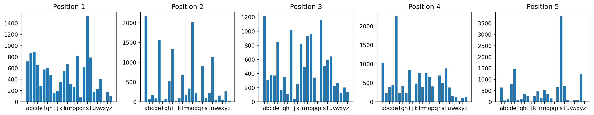
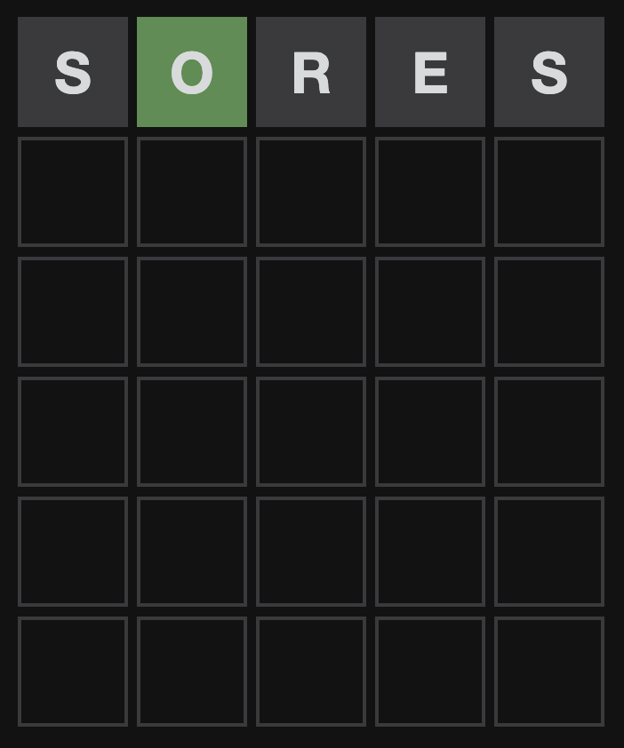
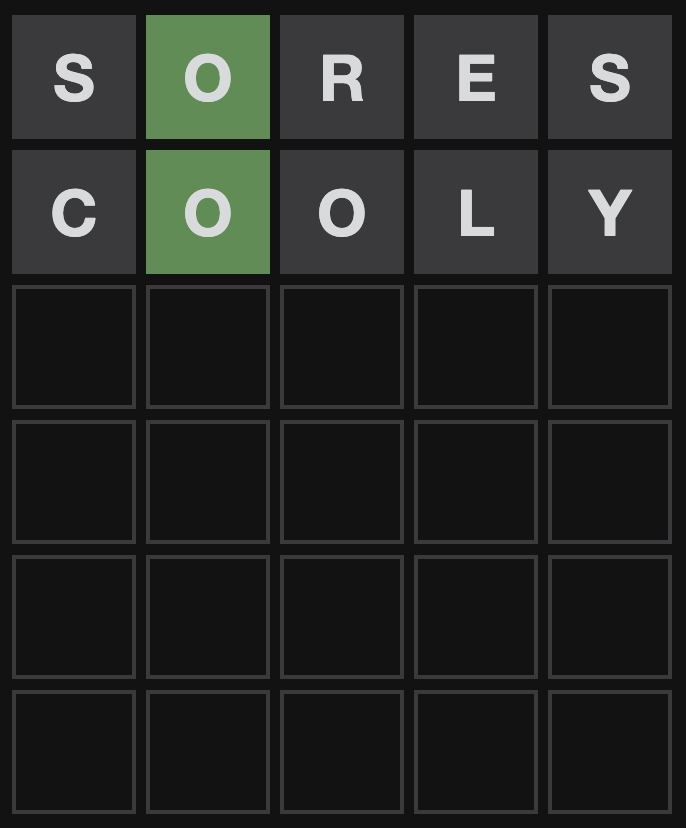
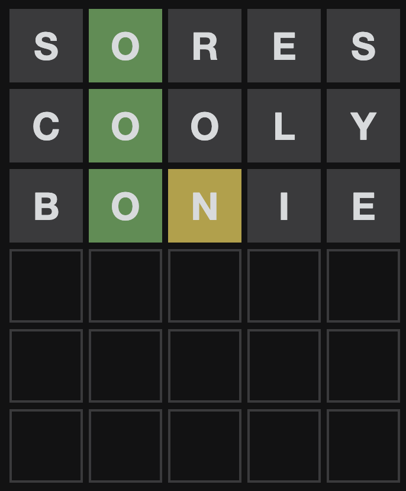
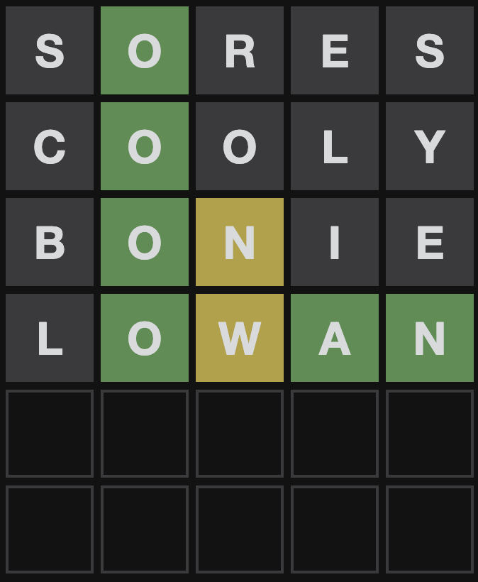
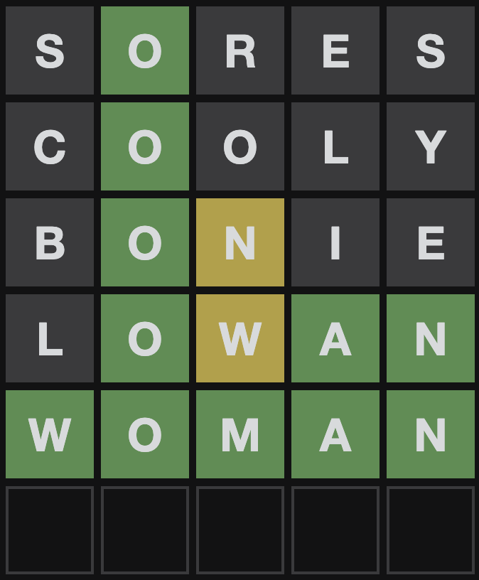

words = ["docty","aahed","aalii","aargh","zygon","zymes","zymic","aaaan","aaaam","cayaa","aaaax","aaaab","aarti","abaca","abaci","aback","abacs","abaft","abaka","abamp","aband","abase","abash","abask","abate","abaya","abbas","abbed","abbes","abbey","abbot","abcee","abeam","abear","abele","abets","abhor","abide","abies","abled","abler","ables","ablet","ablow","abmho","abode","abohm","aboil","aboma","aboon","abord","abore","abort","about","above","abram","abray","abrim","abrin","abris","absey","absit","abuna","abune","abuse","abuts","abuzz","abyes","abysm","abyss","acais","acari","accas","accoy","acerb","acers","aceta","ached","aches","achoo","acids","acidy","acing","acini","ackee","acker","acmes","acmic","acned","acnes","acock","acold","acorn","acred","acres","acrid","acted","actin","acton","actor","acute","acyls","adage","adapt","adaws","adays","addax","added","adder","addio","addle","adeem","adept","adhan","adieu","adios","adits","adman","admen","admin","admit","admix","adobe","adobo","adopt","adore","adorn","adown","adoze","adrad","adred","adsum","aduki","adult","adunc","adust","advew","adyta","adzed","adzes","aecia","aedes","aegis","aeons","aerie","aeros","aesir","afald","afara","afars","afear","affix","afire","aflaj","afoot","afore","afoul","afrit","afros","after","again","agama","agami","agape","agars","agast","agate","agave","agaze","agene","agent","agers","agger","aggie","aggri","aggro","aggry","aghas","agila","agile","aging","agios","agism","agist","agita","aglee","aglet","agley","agloo","aglow","aglus","agmas","agoge","agone","agons","agony","agood","agora","agree","agria","agrin","agued","agues","aguti","ahead","aheap","ahent","ahigh","ahind","ahing","ahint","ahold","ahull","ahuru","aided","aider","aides","aidoi","aidos","aiery","aigas","ailed","aimed","aimer","ainee","ainga","aioli","aired","airer","airns","airth","airts","aisle","aitch","aitus","aiver","aizle","ajiva","ajuga","ajwan","akees","akela","akene","aking","akita","akkas","alaap","alack","alamo","aland","alane","alang","alans","alant","alapa","alaps","alarm","alary","alate","alays","albas","albee","album","alcid","alcos","aldea","alder","aldol","aleck","alecs","alefs","aleft","aleph","alert","alews","aleye","alfas","algae","algal","algas","algid","algin","algor","algum","alias","alibi","alien","alifs","align","alike","aline","alist","alive","aliya","alkie","alkos","alkyd","alkyl","allay","allee","allel","alley","allis","allod","allot","allow","alloy","allyl","almah","almas","almeh","almes","almud","almug","alods","aloed","aloes","aloft","aloha","aloin","alone","along","aloof","aloud","alowe","alpha","altar","alter","altho","altos","alula","alums","alure","alway","amahs","amain","amass","amate","amaut","amaze","amban","amber","ambit","amble","ambos","ambry","ameba","ameer","amend","amene","amens","ament","amias","amice","amici","amide","amido","amids","amies","amiga","amigo","amine","amino","amins","amirs","amiss","amity","amlas","amman","ammon","ammos","amnia","amnic","amnio","amoks","amole","among","amort","amour","amove","amowt","amped","ample","amply","ampul","amrit","amuck","amuse","amyls","anana","anata","ancho","ancle","ancon","andro","anear","anele","anent","angas","angel","anger","angle","anglo","angry","angst","anigh","anile","anils","anima","anime","animi","anion","anise","anker","ankhs","ankle","ankus","anlas","annal","annas","annat","annex","annoy","annul","anoas","anode","anole","anomy","ansae","antae","antar","antas","anted","antes","antic","antis","antra","antre","antsy","anvil","anyon","aorta","apace","apage","apaid","apart","apayd","apays","apeak","apeek","apers","apert","apery","apgar","aphid","aphis","apian","aping","apiol","apish","apism","apnea","apode","apods","apoop","aport","appal","appay","appel","apple","apply","appro","appui","appuy","apres","apron","apses","apsis","apsos","apted","apter","aptly","aquae","aquas","araba","araks","arame","arars","arbas","arbor","arced","arcus","ardeb","ardor","ardri","aread","areae","areal","arear","areas","areca","aredd","arede","arefy","areic","arena","arene","arepa","arere","arete","arets","arett","argal","argan","argil","argle","argol","argon","argot","argue","argus","arhat","arias","ariel","ariki","arils","ariot","arise","arish","arked","arled","arles","armed","armer","armet","armil","armor","arnas","arnut","aroba","aroha","aroid","aroma","arose","arpas","arpen","arrah","arras","array","arret","arris","arrow","arsed","arses","arsey","arsis","arson","artal","artel","artic","artis","artsy","aruhe","arums","arval","arvos","aryls","asana","ascot","ascus","asdic","ashed","ashen","ashes","ashet","aside","asked","asker","askew","askoi","askos","aspen","asper","aspic","aspis","aspro","assai","assam","assay","asses","asset","assez","assot","aster","astir","astun","asway","aswim","asyla","ataps","ataxy","atigi","atilt","atimy","atlas","atman","atmas","atocs","atoke","atoks","atoll","atoms","atomy","atone","atony","atopy","atria","atrip","attap","attar","attic","atuas","audad","audio","audit","auger","aught","augur","aulas","aulic","auloi","aulos","aumil","aunes","aunts","aunty","aurae","aural","aurar","auras","aurei","aures","auric","auris","aurum","autos","auxin","avail","avale","avant","avast","avels","avens","avers","avert","avgas","avian","avine","avion","avise","aviso","avize","avoid","avows","avyze","await","awake","award","aware","awarn","awash","awato","awave","aways","awdls","aweel","aweto","awful","awing","awmry","awned","awner","awoke","awols","awork","axels","axial","axile","axils","axing","axiom","axion","axite","axled","axles","axman","axmen","axoid","axone","axons","ayahs","ayelp","aygre","ayins","ayont","ayres","ayrie","azans","azide","azido","azine","azlon","azoic","azole","azons","azote","azoth","azuki","azure","azurn","azury","azygy","azyme","azyms","baaed","baals","babas","babel","babes","babka","baboo","babul","babus","bacca","bacco","baccy","bacha","bachs","backs","bacon","baddy","badge","badly","baels","baffs","baffy","bafts","bagel","baggy","baghs","bagie","bahts","bahut","bails","bairn","baith","baits","baiza","baize","bajan","bajra","bajri","bajus","baked","baken","baker","bakes","bakra","balas","balds","baldy","baled","baler","bales","balks","balky","balls","bally","balms","balmy","baloo","balsa","balti","balun","balus","bambi","banak","banal","banco","bancs","banda","bandh","bands","bandy","baned","banes","bangs","bania","banjo","banks","banns","bants","bantu","banty","bapus","barbe","barbs","barby","barca","barde","bardo","bards","bardy","bared","barer","bares","barfs","barge","baric","barks","barky","barms","barmy","barns","barny","baron","barps","barra","barre","barro","barry","barye","basal","basan","based","baser","bases","basho","basic","basil","basin","basis","basks","bason","basse","bassi","basso","bassy","basta","baste","basti","basto","basts","batch","bated","bates","bathe","baths","batik","baton","batta","batts","battu","batty","bauds","bauks","baulk","baurs","bavin","bawds","bawdy","bawls","bawns","bawrs","bawty","bayed","bayes","bayle","bayou","bayts","bazar","bazoo","beach","beads","beady","beaks","beaky","beams","beamy","beano","beans","beany","beard","beare","bears","beast","beath","beats","beaty","beaus","beaut","beaux","bebop","becap","becke","becks","bedad","bedel","bedes","bedew","bedim","bedye","beech","beedi","beefs","beefy","beeps","beers","beery","beets","befit","befog","begad","began","begar","begat","begem","beget","begin","begot","begum","begun","beige","beigy","being","bekah","belah","belar","belay","belch","belee","belga","belie","belle","bells","belly","belon","below","belts","bemad","bemas","bemix","bemud","bench","bends","bendy","benes","benet","benis","benne","benni","benny","bento","bents","benty","bepat","beray","beres","beret","bergs","berko","berks","berme","berms","berob","berry","berth","beryl","besat","besaw","besee","beses","beset","besit","besom","besot","besti","bests","betas","beted","betel","betes","beths","betid","beton","betta","betty","bevel","bever","bevor","bevue","bevvy","bewet","bewig","bezel","bezes","bezil","bhaji","bhang","bhels","bhoot","bhuna","bhuts","biali","bialy","bibbs","bible","biccy","bicep","bices","biddy","bided","bider","bides","bidet","bidis","bidon","bield","biers","biffo","biffs","biffy","bifid","bigae","biggs","biggy","bigha","bight","bigly","bigos","bigot","bijou","biked","biker","bikes","bikie","bilbo","bilby","biled","biles","bilge","bilgy","bilks","bills","billy","bimah","bimas","bimbo","binal","bindi","binds","biner","bines","binge","bingo","bings","bingy","binit","binks","bints","biogs","biome","biont","biota","biped","bipod","birch","birds","birks","birle","birls","biros","birrs","birse","birsy","birth","bises","bisks","bison","bitch","biter","bites","bitos","bitou","bitsy","bitte","bitts","bitty","bivia","bivvy","bizes","bizzo","bizzy","blabs","black","blade","blads","blady","blaer","blaes","blaff","blags","blahs","blain","blame","blams","bland","blank","blare","blart","blase","blash","blast","blate","blats","blatt","blaud","blawn","blaws","blays","blaze","bleak","blear","bleat","blebs","bleed","bleep","blees","blend","blent","blert","bless","blest","blets","bleys","blimp","blimy","blind","bling","blini","blink","blins","bliny","blips","bliss","blist","blite","blitz","blive","bloat","blobs","block","blocs","blogs","bloke","blond","blood","bloom","bloop","blore","blots","blown","blows","blowy","blubs","blude","bludy","blued","bluer","blues","bluet","bluey","bluff","bluid","blume","blunk","blunt","blurb","blurs","blurt","blush","blype","boabs","boaks","board","boars","boart","boast","boats","bobac","bobak","bobas","bobby","bobol","bocca","bocce","bocci","boche","bocks","boded","bodes","bodge","bodle","boeps","boets","boeuf","boffo","boffs","bogan","bogey","boggy","bogie","bogle","bogus","bohea","bohos","boils","boing","boink","boite","boked","bokes","bokos","bolar","bolas","bolds","boles","bolix","bolls","bolos","bolts","bolus","bomas","bombe","bombo","bombs","bonce","bonds","boned","boner","bones","boney","bongo","bongs","bonie","bonks","bonne","bonny","bonus","bonza","bonze","boobs","booby","boody","booed","boofy","boogy","boohs","books","booky","bools","booms","boomy","boong","boons","boord","boors","boose","boost","booth","boots","booty","booze","boozy","borak","boral","boras","borax","borde","bords","bored","boree","borel","borer","bores","borgo","boric","borks","borms","borna","borne","boron","borts","borty","bortz","bosks","bosky","bosom","boson","bossy","bosun","botas","botch","botel","bothy","botte","botts","botty","bouge","bough","bouks","boule","boult","bound","bouns","bourd","bourg","bourn","bouse","bousy","bouts","bovid","bowat","bowed","bowel","bower","bowes","bowet","bowie","bowls","bowne","bowrs","bowse","boxed","boxen","boxer","boxes","boyar","boyau","boyed","boyfs","boygs","boyla","boyos","boysy","bozos","braai","brace","brach","brack","bract","brads","braes","brags","braid","brail","brain","brake","braks","braky","brame","brand","brank","brans","brant","brash","brass","brast","brats","brava","brave","bravi","bravo","brawl","brawn","braws","braxy","brays","braza","braze","bread","break","bream","brede","breds","breed","breem","breer","brees","breid","breis","breme","brens","brent","brere","brers","breve","brews","breys","briar","bribe","brick","bride","brief","brier","bries","brigs","briks","brill","brims","brine","bring","brink","brins","briny","brios","brise","brisk","briss","brith","brits","britt","brize","broad","broch","brock","brods","brogh","brogs","broil","broke","brome","bromo","bronc","brond","brood","brook","brool","broom","broos","brose","brosy","broth","brown","brows","brugh","bruin","bruit","brule","brume","brung","brunt","brush","brusk","brust","brute","bruts","buats","buaze","bubal","bubas","bubba","bubby","bubus","buchu","bucko","bucks","bucku","budas","buddy","budge","budis","budos","buffa","buffe","buffi","buffo","buffs","buffy","bufos","buggy","bugle","buhls","buhrs","buiks","build","built","buist","bukes","bulbs","bulge","bulgy","bulks","bulky","bulla","bulls","bully","bulse","bumbo","bumfs","bumph","bumps","bumpy","bunas","bunce","bunch","bunco","bunde","bundh","bunds","bundt","bundu","bundy","bungs","bungy","bunia","bunje","bunjy","bunko","bunks","bunns","bunny","bunts","bunty","bunya","buoys","buppy","buran","buras","burbs","burds","buret","burgh","burgs","burin","burka","burke","burks","burls","burly","burns","burnt","buroo","burps","burqa","burro","burrs","burry","bursa","burse","burst","busby","bused","buses","bushy","busks","busky","bussu","busti","busts","busty","butch","buteo","butes","butle","butte","butts","butty","butut","butyl","buxom","buyer","buzzy","bwana","bwazi","byded","bydes","byked","bykes","bylaw","byres","byrls","byssi","bytes","byway","caaed","cabal","cabas","cabby","caber","cabin","cable","cabob","caboc","cabre","cacao","cacas","cache","cacky","cacti","caddy","cadee","cades","cadet","cadge","cadgy","cadie","cadis","cadre","caeca","caese","cafes","caffs","caged","cager","cages","cagey","cagot","cahow","caids","cains","caird","cairn","cajon","cajun","caked","cakes","cakey","calfs","calid","calif","calix","calks","calla","calls","calms","calmy","calos","calpa","calps","calve","calyx","caman","camas","camel","cameo","cames","camis","camos","campi","campo","camps","campy","camus","canal","candy","caned","caneh","caner","canes","cangs","canid","canna","canns","canny","canoe","canon","canso","canst","canto","cants","canty","capas","caped","caper","capes","caphs","capiz","caple","capon","capos","capot","capul","caput","carap","carat","carbo","carbs","carby","cardi","cards","cardy","cared","carer","cares","caret","carex","cargo","carks","carle","carls","carns","carny","carob","carol","carom","carpi","carps","carrs","carry","carse","carta","carte","carts","carve","carvy","casas","casco","cased","cases","casks","casky","caste","casts","casus","catch","cater","cates","catty","cauda","cauks","cauld","caulk","cauls","caums","caups","causa","cause","cavas","caved","cavel","caver","caves","cavie","cavil","cawed","cawks","caxon","cease","ceaze","cebid","cecal","cecum","cedar","ceded","ceder","cedes","cedis","ceiba","ceili","ceils","celeb","cella","celli","cello","cells","celom","celts","cense","cento","cents","centu","ceorl","cepes","cerci","cered","ceres","cerge","ceria","ceric","cerne","ceros","certs","cesse","cesta","cesti","cetes","cetyl","chace","chack","chaco","chado","chads","chafe","chaff","chaft","chain","chair","chais","chalk","chals","champ","chams","chang","chank","chant","chaos","chape","chaps","chapt","chara","chard","chare","chark","charm","charr","chars","chart","chary","chase","chasm","chats","chave","chavs","chawk","chaws","chaya","chays","cheap","cheat","check","cheek","cheep","cheer","chefs","cheka","chela","chelp","chemo","chere","chert","chess","chest","cheth","chevy","chews","chewy","chiao","chias","chibs","chica","chich","chick","chico","chics","chide","chief","chiel","chiks","child","chile","chili","chill","chimb","chime","chimo","chimp","china","chine","chink","chino","chins","chips","chirk","chirl","chirm","chiro","chirp","chirr","chirt","chiru","chits","chive","chivs","chivy","chizz","chock","choco","chocs","chode","chogs","choir","choke","choko","choky","chola","choli","cholo","chomp","chons","choof","chook","choom","chops","chord","chore","chose","chota","chott","chout","choux","chowk","chows","chubs","chuck","chufa","chuff","chugs","chump","chums","chunk","churl","churn","churr","chuse","chute","chyle","chyme","chynd","ciaos","cibol","cided","cider","cides","ciels","cigar","ciggy","cilia","cills","cimar","cimex","cinch","cinct","cines","cions","cippi","circa","circs","cires","cirls","cirri","cisco","cissy","cists","cital","cited","citer","cites","cives","civet","civic","civie","civil","civvy","clach","clack","clade","clads","claes","clags","claim","clame","clamp","clams","clang","clank","clans","claps","clapt","claro","clart","clary","clash","clasp","class","clast","clats","claut","clave","clavi","claws","clays","clean","clear","cleat","cleck","cleek","cleep","clefs","cleft","clegs","cleik","clems","clepe","clept","clerk","cleve","clews","click","clied","clies","cliff","clift","climb","clime","cline","cling","clink","clint","clipe","clips","clipt","cloak","cloam","clock","clods","cloff","clogs","cloke","clomb","clomp","clone","clonk","clons","cloop","cloot","clops","close","clote","cloth","clots","cloud","clour","clous","clout","clove","clown","clows","cloye","cloys","cloze","clubs","cluck","clued","clues","clump","clung","clunk","clype","cnida","coach","coact","coala","coals","coaly","coapt","coarb","coast","coate","coati","coats","cobbs","cobby","cobia","coble","cobra","cobza","cocas","cocci","cocco","cocks","cocky","cocoa","cocos","codas","codec","coded","coden","coder","codes","codex","codon","coeds","coffs","cogie","cogon","cogue","cohab","cohoe","cohog","cohos","coifs","coign","coils","coins","coirs","coits","coked","cokes","colas","colby","colds","coled","coles","coley","colic","colin","colls","colly","colog","colon","color","colts","colza","comae","comal","comas","combe","combi","combo","combs","comby","comer","comes","comet","comfy","comic","comix","comma","commo","comms","commy","compo","comps","compt","comte","comus","conch","condo","coned","cones","coney","confs","conga","conge","congo","conia","conic","conin","conks","conky","conne","conns","conte","conto","conus","convo","cooch","cooed","cooee","cooer","cooey","coofs","cooks","cooky","cools","cooly","coomb","cooms","coomy","coons","coops","coopt","coost","coots","cooze","copal","copay","coped","copen","coper","copes","coppy","copra","copse","copsy","coral","coram","corbe","corby","cords","cored","corer","cores","corey","corgi","coria","corks","corky","corms","corni","corno","corns","cornu","corny","corps","corse","corso","cosec","cosed","coses","coset","cosey","cosie","costa","coste","costs","cotan","coted","cotes","coths","cotta","cotts","couch","coude","cough","could","count","coupe","coups","courb","courd","coure","cours","court","couth","coved","coven","cover","coves","covet","covey","covin","cowal","cowan","cowed","cower","cowks","cowls","cowps","cowry","coxae","coxal","coxed","coxes","coyed","coyer","coyly","coypu","cozed","cozen","cozes","cozey","cozie","craal","crabs","crack","craft","crags","craic","craig","crake","crame","cramp","crams","crane","crank","crans","crape","craps","crapy","crare","crash","crass","crate","crave","crawl","craws","crays","craze","crazy","creak","cream","credo","creds","creed","creek","creel","creep","crees","creme","crems","crena","crepe","crept","crepy","cress","crest","crewe","crews","cribs","crick","cried","crier","cries","crime","crimp","crims","crine","crios","cripe","crise","crisp","crith","crits","croak","croci","crock","crocs","croft","crogs","cromb","crome","crone","cronk","crony","crook","crool","croon","crops","crore","cross","crost","croup","crout","crowd","crown","crows","croze","cruck","crude","cruds","crudy","cruel","crues","cruet","crumb","crump","cruor","crura","cruse","crush","crust","crusy","cruve","crwth","crypt","ctene","cubby","cubeb","cubed","cuber","cubes","cubic","cubit","cuddy","cuffo","cuffs","cuifs","cuing","cuish","cuits","cukes","culch","culet","culex","culls","cully","culms","culpa","culti","cults","culty","cumec","cumin","cundy","cunei","cunts","cupel","cupid","cuppa","cuppy","curat","curbs","curch","curds","curdy","cured","curer","cures","curet","curfs","curia","curie","curio","curli","curls","curly","curns","curny","currs","curry","curse","cursi","curst","curve","curvy","cusec","cushy","cusks","cusps","cusso","cutch","cuter","cutes","cutey","cutie","cutin","cutis","cutto","cutty","cutup","cuvee","cwtch","cyano","cyans","cyber","cycad","cycas","cycle","cyclo","cyder","cylix","cymae","cymar","cymas","cymes","cymol","cynic","cysts","cytes","cyton","czars","dabba","daces","dacha","dacks","dadah","dadas","daddy","dados","daffs","daffy","dagga","daggy","dagos","dahls","daily","daine","daint","dairy","daisy","daker","daled","dales","dalis","dalle","dally","dalts","daman","damar","dames","damme","damns","damps","dampy","dance","dandy","dangs","danio","danks","danny","dants","daraf","darbs","darcy","dared","darer","dares","darga","dargs","daric","daris","darks","darky","darns","darre","darts","darzi","dashi","dashy","datal","dated","dater","dates","datos","datto","datum","daube","daubs","dauby","dauds","dault","daunt","daurs","dauts","daven","davit","dawah","dawds","dawed","dawen","dawks","dawns","dawts","dayan","daych","daynt","dazed","dazer","dazes","deads","deair","deals","dealt","deans","deare","dearn","dears","deary","deash","death","deave","deaws","deawy","debag","debar","debby","debel","debes","debit","debts","debud","debug","debus","debut","debye","decad","decaf","decal","decay","decko","decks","decor","decos","decoy","decry","dedal","deeds","deedy","deely","deems","deens","deeps","deere","deers","deets","deeve","deevs","defat","defer","deffo","defis","defog","degas","degum","deice","deids","deify","deign","deils","deism","deist","deity","deked","dekes","dekko","delay","deled","deles","delfs","delft","delis","dells","delly","delos","delph","delta","delts","delve","deman","demes","demic","demit","demob","demon","demos","dempt","demur","denar","denay","denes","denet","denim","denis","dense","dents","deoxy","depot","depth","derat","deray","derby","dered","deres","derig","derma","derms","derns","deros","derro","derry","derth","dervs","desex","deshi","desks","desse","deter","detox","deuce","devas","devel","devil","devon","devot","dewan","dewar","dewax","dewed","dexes","dexie","dhaks","dhals","dhobi","dhole","dholl","dhols","dhoti","dhows","dhuti","diact","dials","diary","diazo","dibbs","diced","dicer","dices","dicey","dicht","dicks","dicky","dicot","dicta","dicts","dicty","diddy","didie","didos","didst","diebs","diene","diets","diffs","dight","digit","dikas","diked","diker","dikes","dikey","dildo","dilli","dills","dilly","dimer","dimes","dimly","dimps","dinar","dined","diner","dines","dinge","dingo","dings","dingy","dinic","dinks","dinky","dinna","dinos","dints","diode","diols","diota","dippy","dipso","diram","direr","dirge","dirke","dirks","dirls","dirts","dirty","disas","disci","disco","discs","dishy","disks","disme","dital","ditas","ditch","dited","dites","ditsy","ditto","ditts","ditty","ditzy","divan","divas","dived","diver","dives","divis","divot","divvy","diwan","dixie","dixit","dizen","dizzy","djinn","djins","doabs","doats","dobby","dobie","dobla","dobra","dobro","docht","docks","docos","doddy","dodge","dodgy","dodos","doeks","doers","doest","doeth","doffs","doges","dogey","doggo","doggy","dogie","dogma","dohyo","doilt","doily","doing","doits","dojos","dolce","dolci","doled","doles","dolia","dolls","dolly","dolma","dolor","dolos","dolts","domal","domed","domes","domic","donah","donas","donee","doner","donga","dongs","donko","donna","donne","donny","donor","donsy","donut","doobs","doody","dooks","doole","dools","dooly","dooms","doomy","doona","doorn","doors","doozy","dopas","doped","doper","dopes","dopey","dorad","dorba","dorbs","doree","doric","doris","dorks","dorky","dorms","dormy","dorps","dorrs","dorsa","dorse","dorts","dorty","dosed","doseh","doser","doses","dotal","doted","doter","dotes","dotty","douar","doubt","douce","doucs","dough","douks","doula","douma","doums","doups","doura","douse","douts","doved","doven","dover","doves","dovie","dowar","dowds","dowdy","dowed","dowel","dower","dowie","dowle","dowls","dowly","downa","downs","downy","dowps","dowry","dowse","dowts","doxie","doyen","doyly","dozed","dozen","dozer","dozes","drabs","drack","draco","draff","draft","drags","drail","drain","drake","drama","drams","drank","drant","drape","draps","drats","drave","drawl","drawn","draws","drays","dread","dream","drear","dreck","dreed","drees","dregs","dreks","drent","drere","dress","drest","dreys","dribs","drice","dried","drier","dries","drift","drill","drily","drink","drips","dript","drive","droid","droil","droit","drole","droll","drome","drone","drony","droob","droog","drook","drool","droop","drops","dropt","dross","drouk","drove","drown","drows","drubs","drugs","druid","drums","drunk","drupe","druse","drusy","druxy","dryad","dryer","dryly","dsobo","dsomo","duads","duals","duans","duars","dubbo","ducal","ducat","duces","duchy","ducks","ducky","ducts","duddy","duded","dudes","duels","duets","duett","duffs","dufus","duing","duits","dukas","duked","dukes","dukka","dules","dulia","dulls","dully","dulse","dumas","dumbo","dumbs","dumka","dumky","dummy","dumps","dumpy","dunam","dunce","dunch","dunes","dungs","dungy","dunks","dunno","dunny","dunsh","dunts","duomi","duomo","duped","duper","dupes","duple","duply","duppy","dural","duras","dured","dures","durgy","durns","duroc","duros","duroy","durra","durrs","durry","durst","durum","durzi","dusks","dusky","dusts","dusty","dutch","duvet","duxes","dwaal","dwale","dwalm","dwams","dwang","dwarf","dwaum","dweeb","dwell","dwelt","dwile","dwine","dyads","dyers","dying","dyked","dykes","dykey","dynel","dynes","dzhos","eager","eagle","eagre","eales","eaned","eards","eared","earls","early","earns","earst","earth","eased","easel","easer","eases","easle","easts","eaten","eater","eathe","eaved","eaves","ebbed","ebbet","ebons","ebony","ebook","ecads","eched","eches","echos","eclat","ecrus","edema","edged","edger","edges","edict","edify","edile","edits","educe","educt","eejit","eerie","eeven","eevns","effed","egads","egers","egest","eggar","egged","egger","egmas","egret","ehing","eider","eidos","eight","eigne","eiked","eikon","eilds","eisel","eject","eking","ekkas","elain","eland","elans","elate","elbow","elchi","elder","eldin","elect","elegy","elemi","elfed","elfin","eliad","elide","elint","elite","elmen","eloge","elogy","eloin","elope","elops","elpee","elsin","elude","elute","elvan","elver","elves","emacs","email","embar","embay","embed","ember","embog","embow","embox","embus","emcee","emeer","emend","emery","emeus","emirs","emits","emmas","emmer","emmet","emmew","emmys","emong","emote","emove","empts","empty","emule","emure","emyde","emyds","enact","enarm","enate","ended","ender","endew","endow","endue","enema","enemy","enews","enfix","eniac","enjoy","enlit","enmew","ennog","ennui","enoki","enols","enorm","enows","enrol","ensew","ensky","ensue","enter","entia","entry","enure","envoi","envoy","enzym","eorls","eosin","epact","epees","ephah","ephas","ephod","ephor","epics","epoch","epode","epopt","epoxy","epris","eprom","equal","equid","equip","erase","erbia","erect","erevs","ergon","ergos","ergot","erica","erick","erics","ering","erned","ernes","erode","erose","erred","error","erses","eruct","erugo","erupt","eruvs","erven","ervil","escar","escot","esile","eskar","esker","esnes","essay","esses","ester","estoc","estop","estro","etage","etape","etats","etens","ethal","ether","ethic","ethos","ethyl","etnas","ettin","ettle","etude","etuis","etwee","etyma","eughs","euked","eupad","euros","eusol","evade","evens","event","evert","every","evets","evhoe","evict","evils","evite","evohe","evoke","ewers","ewest","ewhow","ewked","exact","exalt","exams","excel","exeat","execs","exeem","exeme","exert","exies","exile","exine","exing","exist","exits","exode","exons","expat","expel","expos","extol","extra","exude","exuls","exult","exurb","eyass","eyers","eying","eyots","eyras","eyres","eyrie","eyrir","fable","faced","facer","faces","facet","facia","facts","faddy","faded","fader","fades","fadge","fados","faena","faery","faffs","faggy","fagin","fagot","faiks","fails","faine","fains","faint","fairs","fairy","faith","faked","faker","fakes","fakey","fakir","falaj","falls","false","famed","fames","fanal","fancy","fands","fanes","fanga","fango","fangs","fanks","fanny","fanon","fanos","fanum","faqir","farad","farce","farci","farcy","fards","fared","farer","fares","farle","farls","farms","faros","farse","farts","fasci","fasti","fasts","fatal","fated","fates","fatly","fatso","fatty","fatwa","faugh","fauld","fault","fauna","fauns","faurd","fauts","fauve","favas","favel","faver","faves","favor","favus","fawns","fawny","faxed","faxes","fayed","fayer","fayne","fayre","fazed","fazes","feals","feare","fears","fease","feast","feats","feaze","fecal","feces","fecht","fecit","fecks","fedex","feebs","feeds","feels","feens","feers","feese","feeze","fehme","feign","feint","feist","felid","fella","fells","felly","felon","felts","felty","femal","femes","femme","femmy","femur","fence","fends","fendy","fenis","fenks","fenny","fents","feods","feoff","feral","ferer","feres","feria","ferly","fermi","ferms","ferns","ferny","ferry","fesse","festa","fests","festy","fetal","fetas","fetch","feted","fetes","fetid","fetor","fetta","fetts","fetus","fetwa","feuar","feuds","feued","fever","fewer","feyed","feyer","feyly","fezes","fezzy","fiars","fiats","fiber","fibre","fibro","fices","fiche","fichu","ficin","ficos","ficus","fidge","fidos","fiefs","field","fiend","fient","fiere","fiers","fiery","fiest","fifed","fifer","fifes","fifth","fifty","fight","figos","fiked","fikes","filar","filch","filed","filer","files","filet","fille","fillo","fills","filly","filmi","films","filmy","filos","filth","filum","final","finca","finch","finds","fined","finer","fines","finis","finks","finny","finos","fiord","fique","fired","firer","fires","firie","firks","firms","firns","firry","first","firth","fiscs","fishy","fisks","fists","fisty","fitch","fitly","fitna","fitte","fitts","fiver","fives","fixed","fixer","fixes","fixit","fizzy","fjeld","fjord","flabs","flack","flaff","flags","flail","flair","flake","flaks","flaky","flame","flamm","flams","flamy","flank","flans","flaps","flare","flary","flash","flask","flats","flawn","flaws","flawy","flaxy","flays","fleam","fleas","fleck","fleer","flees","fleet","flegs","fleme","flesh","flews","flexo","fleys","flick","flics","flied","flier","flies","flimp","flims","fling","flint","flips","flirs","flirt","flisk","flite","flits","flitt","float","flock","flocs","floes","flogs","flong","flood","floor","flops","flora","flors","flory","flosh","floss","flota","flote","flour","flout","flown","flows","flubs","flued","flues","fluey","fluff","fluid","fluke","fluky","flume","flump","flung","flunk","fluor","flurr","flush","flute","fluty","fluyt","flyby","flyer","flype","flyte","foals","foams","foamy","focal","focus","foehn","fogey","foggy","fogie","fogle","fohns","foids","foils","foins","foist","folds","foley","folia","folic","folie","folio","folks","folky","folly","fomes","fonda","fonds","fondu","fonly","fonts","foods","foody","fools","foots","footy","foram","foray","forbs","forby","force","fordo","fords","forel","fores","forex","forge","forgo","forks","forky","forme","forms","forte","forth","forts","forty","forum","forza","forze","fossa","fosse","fouat","fouds","fouer","fouet","foule","fouls","found","fount","fours","fouth","fovea","fowls","fowth","foxed","foxes","foxie","foyer","foyle","foyne","frabs","frack","fract","frags","frail","fraim","frame","franc","frank","frape","fraps","frass","frate","frati","frats","fraud","fraus","frays","freak","freed","freer","frees","freet","freit","fremd","frena","freon","frere","fresh","frets","friar","fribs","fried","frier","fries","frigs","frill","frise","frisk","frist","frith","frits","fritt","fritz","frize","frizz","frock","froes","frogs","frond","frons","front","frore","frorn","frory","frosh","frost","froth","frown","frows","frowy","froze","frugs","fruit","frump","frush","frust","fryer","fubar","fubby","fubsy","fucks","fucus","fuddy","fudge","fuels","fuero","fuffs","fuffy","fugal","fuggy","fugie","fugio","fugle","fugly","fugue","fugus","fujis","fulls","fully","fumed","fumer","fumes","fumet","fundi","funds","fundy","fungi","fungo","fungs","funks","funky","funny","fural","furan","furca","furls","furol","furor","furrs","furry","furth","furze","furzy","fused","fusee","fusel","fuses","fusil","fussy","fusts","fusty","futon","fuzed","fuzee","fuzes","fuzil","fuzzy","fyces","fyked","fykes","fyles","fyrds","fytte","gabby","gable","gaddi","gades","gadge","gadid","gadis","gadje","gadjo","gadso","gaffe","gaffs","gaged","gager","gages","gaids","gaily","gains","gairs","gaits","gaitt","gajos","galah","galas","galax","galea","gales","galls","gally","galop","galut","galvo","gamas","gamay","gamba","gambe","gambo","gambs","gamed","gamer","games","gamey","gamic","gamin","gamma","gamme","gammy","gamps","gamut","ganch","gandy","ganef","ganev","gangs","ganja","ganof","gants","gaols","gaped","gaper","gapes","gapos","gappy","garbe","garbo","garbs","garda","garis","garni","garre","garth","garum","gases","gasps","gaspy","gassy","gasts","gated","gater","gates","gaths","gator","gaucy","gauds","gaudy","gauge","gauje","gault","gaums","gaumy","gaunt","gaups","gaurs","gauss","gauze","gauzy","gavel","gavot","gawcy","gawds","gawks","gawky","gawps","gawsy","gayal","gayer","gayly","gazal","gazar","gazed","gazer","gazes","gazon","gazoo","geals","geans","geare","gears","geats","gebur","gecko","gecks","geeks","geeky","geeps","geese","geest","geist","geits","gelds","gelee","gelid","gelly","gelts","gemel","gemma","gemmy","gemot","genal","genas","genes","genet","genic","genie","genii","genip","genny","genoa","genom","genre","genro","gents","genty","genua","genus","geode","geoid","gerah","gerbe","geres","gerle","germs","germy","gerne","gesse","gesso","geste","gests","getas","getup","geums","geyan","geyer","ghast","ghats","ghaut","ghazi","ghees","ghest","ghost","ghoul","ghyll","giant","gibed","gibel","giber","gibes","gibli","gibus","giddy","gifts","gigas","gighe","gigot","gigue","gilas","gilds","gilet","gills","gilly","gilpy","gilts","gimel","gimme","gimps","gimpy","ginge","gings","ginks","ginny","ginzo","gipon","gippo","gippy","gipsy","girds","girls","girly","girns","giron","giros","girrs","girsh","girth","girts","gismo","gisms","gists","gites","giust","gived","given","giver","gives","gizmo","glace","glade","glads","glady","glaik","glair","glams","gland","glans","glare","glary","glass","glaum","glaur","glaze","glazy","gleam","glean","gleba","glebe","gleby","glede","gleds","gleed","gleek","glees","gleet","gleis","glens","glent","gleys","glial","glias","glibs","glide","gliff","glift","glike","glime","glims","glint","glisk","glits","glitz","gloam","gloat","globe","globi","globs","globy","glode","glogg","gloms","gloom","gloop","glops","glory","gloss","glost","glout","glove","glows","gloze","glued","gluer","glues","gluey","glugs","glume","glums","gluon","glute","gluts","glyph","gnarl","gnarr","gnars","gnash","gnats","gnawn","gnaws","gnome","gnows","goads","goafs","goals","goary","goats","goaty","goban","gobbi","gobbo","gobby","gobos","godet","godly","godso","goels","goers","goety","gofer","goffs","gogga","gogos","goier","going","golds","goldy","golem","goles","golfs","golly","golpe","golps","gombo","gomer","gompa","gonad","gonef","goner","gongs","gonia","gonif","gonks","gonna","gonof","gonys","gonzo","gooby","goods","goody","gooey","goofs","goofy","googs","gooks","gooky","goold","gools","gooly","goons","goony","goops","goopy","goors","goory","goose","goosy","gopak","gopik","goral","goras","gored","gores","gorge","goris","gorms","gormy","gorps","gorse","gorsy","gosht","gosse","goths","gotta","gouge","gouks","goura","gourd","gouts","gouty","gowan","gowds","gowfs","gowks","gowls","gowns","goxes","goyim","graal","grabs","grace","grade","grads","graff","graft","grail","grain","graip","grama","grame","gramp","grams","grana","grand","grans","grant","grape","graph","grapy","grasp","grass","grate","grave","gravs","gravy","grays","graze","great","grebe","grece","greed","greek","green","grees","greet","grege","grego","grein","grens","grenz","grese","greve","grews","greys","grice","gride","grids","grief","griff","grift","grigs","grike","grill","grime","grimy","grind","grins","griot","gripe","grips","gript","gripy","grise","grist","grisy","grith","grits","grize","groan","groat","grody","grogs","groin","groks","groma","grone","groof","groom","grope","gross","grosz","grots","grouf","group","grout","grove","growl","grown","grows","grubs","grued","gruel","grues","grufe","gruff","grume","grump","grunt","gryce","gryde","gryke","grype","grypt","guaco","guana","guano","guans","guard","guars","guava","gucks","gucky","gudes","guess","guest","guffs","gugas","guide","guids","guild","guile","guilt","guimp","guiro","guise","gulag","gular","gulas","gulch","gules","gulfs","gulfy","gulls","gully","gulph","gulps","gulpy","gumbo","gumma","gummy","gumps","gundy","gunge","gungy","gunks","gunky","gunny","guppy","gurge","gurls","gurly","gurns","gurry","gursh","gurus","gushy","gusla","gusle","gusli","gussy","gusto","gusts","gusty","gutsy","gutta","gutty","guyed","guyle","guyot","guyse","gwine","gyals","gybed","gybes","gyeld","gymps","gynae","gynie","gynny","gyoza","gyppo","gyppy","gypsy","gyral","gyred","gyres","gyron","gyros","gyrus","gytes","gyved","gyves","haafs","haars","habit","hable","habus","hacek","hacks","hadal","haded","hades","hadji","hadst","haems","haets","haffs","hafiz","hafts","haggs","hahas","haick","haika","haiks","haiku","hails","haily","hains","haint","hairs","hairy","haith","hajes","hajis","hajji","hakam","hakas","hakea","hakes","hakim","hakus","halal","haled","haler","hales","halfa","halfs","halid","hallo","halls","halma","halms","halon","halos","halse","halts","halva","halve","hamal","hamba","hamed","hames","hammy","hamza","hanap","hance","hanch","hands","handy","hangi","hangs","hanks","hanky","hansa","hanse","hants","haole","haoma","hapax","haply","happy","hapus","haram","hards","hardy","hared","harem","hares","harim","harks","harls","harms","harns","haros","harps","harpy","harry","harsh","harts","hashy","hasks","hasps","hasta","haste","hasty","hatch","hated","hater","hates","hatha","hauds","haufs","haugh","hauld","haulm","hauls","hault","haunt","hause","haute","haven","haver","haves","havoc","hawed","hawks","hawms","hawse","hayed","hayer","hayey","hayle","hazan","hazed","hazel","hazer","hazes","heads","heady","heald","heals","heame","heaps","heapy","heard","heare","hears","heart","heast","heath","heats","heave","heavy","heben","hebes","hecht","hecks","heder","hedge","hedgy","heeds","heedy","heels","heeze","hefte","hefts","hefty","heids","heigh","heils","heirs","heist","hejab","hejra","heled","heles","helio","helix","hello","hells","helms","helos","helot","helps","helve","hemal","hemes","hemic","hemin","hemps","hempy","hence","hends","henge","henna","henny","henry","hents","hepar","herbs","herby","herds","heres","herls","herma","herms","herns","heroe","heron","heros","herry","herse","hertz","herye","hesps","hests","hetes","heths","heuch","heugh","hevea","hewed","hewer","hewgh","hexad","hexed","hexer","hexes","hexyl","heyed","hiant","hicks","hided","hider","hides","hiems","highs","hight","hijab","hijra","hiked","hiker","hikes","hikoi","hilar","hilch","hillo","hills","hilly","hilts","hilum","hilus","himbo","hinau","hinds","hinge","hings","hinky","hinny","hints","hiois","hiply","hippo","hippy","hired","hiree","hirer","hires","hissy","hists","hitch","hithe","hived","hiver","hives","hizen","hoaed","hoagy","hoard","hoars","hoary","hoast","hobby","hobos","hocks","hocus","hodad","hodja","hoers","hogan","hogen","hoggs","hoghs","hohed","hoick","hoiks","hoing","hoise","hoist","hoked","hokes","hokey","hokis","hokku","hokum","holds","holed","holes","holey","holks","holla","hollo","holly","holms","holon","holts","homas","homed","homer","homes","homey","homie","homme","homos","honan","honda","honds","honed","honer","hones","honey","hongi","hongs","honks","honky","honor","hooch","hoods","hoody","hooey","hoofs","hooka","hooks","hooky","hooly","hoons","hoops","hoord","hoosh","hoots","hooty","hoove","hoped","hoper","hopes","hoppy","horah","horal","horas","horde","horis","horme","horns","horny","horse","horst","horsy","hosed","hosel","hosen","hoser","hoses","hosey","hosta","hosts","hotch","hotel","hoten","hotly","hotty","houff","houfs","hough","hound","houri","hours","house","houts","hovea","hoved","hovel","hoven","hover","hoves","howbe","howdy","howes","howff","howfs","howks","howls","howre","howso","hoxed","hoxes","hoyas","hoyed","hoyle","hubby","hucks","hudna","hudud","huers","huffs","huffy","huger","huggy","huhus","huias","hulas","hules","hulks","hulky","hullo","hulls","hully","human","humas","humfs","humic","humid","humor","humph","humps","humpy","humus","hunch","hunks","hunky","hunts","hurds","hurls","hurly","hurra","hurry","hurst","hurts","hushy","husks","husky","husos","hussy","hutch","hutia","huzza","huzzy","hwyls","hydra","hydro","hyena","hyens","hying","hykes","hylas","hyleg","hyles","hylic","hymen","hymns","hynde","hyoid","hyped","hyper","hypes","hypha","hypos","hyrax","hyson","hythe","iambi","iambs","icers","iched","iches","ichor","icier","icily","icing","icker","ickle","icons","ictal","ictic","ictus","idant","ideal","ideas","idees","ident","idiom","idiot","idled","idler","idles","idola","idols","idyll","idyls","iftar","igapo","igged","igloo","iglus","ihram","ikans","ikats","ikons","ileac","ileal","ileum","ileus","iliac","iliad","ilial","ilium","iller","illth","image","imago","imams","imari","imaum","imbar","imbed","imbue","imide","imido","imids","imine","imino","immew","immit","immix","imped","impel","impis","imply","impot","imshi","imshy","inane","inapt","inarm","inbye","incle","incog","incur","incus","incut","indew","index","indie","indol","indow","indri","indue","inept","inerm","inert","infer","infix","infos","infra","ingan","ingle","ingot","inion","inked","inker","inkle","inlay","inlet","inned","inner","inorb","input","inrun","inset","intel","inter","intil","intis","intra","intro","inula","inure","inurn","inust","invar","inwit","iodic","iodid","iodin","ionic","iotas","ippon","irade","irate","irids","iring","irked","iroko","irone","irons","irony","isbas","ishes","isled","isles","islet","isnae","issei","issue","istle","itchy","items","ither","ivied","ivies","ivory","ixias","ixora","ixtle","izard","izars","izzat","jaaps","jabot","jacal","jacks","jacky","jaded","jades","jafas","jagas","jager","jaggs","jaggy","jagir","jagra","jails","jakes","jakey","jalap","jalop","jambe","jambo","jambs","jambu","james","jammy","janes","janns","janny","janty","japan","japed","japer","japes","jarks","jarls","jarps","jarta","jarul","jasey","jaspe","jasps","jatos","jauks","jaunt","jaups","javas","javel","jawan","jawed","jaxie","jazzy","jeans","jeats","jebel","jedis","jeels","jeely","jeeps","jeers","jefes","jeffs","jehad","jehus","jelab","jello","jells","jelly","jembe","jemmy","jenny","jerid","jerks","jerky","jerry","jesse","jests","jesus","jetes","jeton","jetty","jeune","jewed","jewel","jewie","jhala","jiaos","jibbs","jibed","jiber","jibes","jiffs","jiffy","jiggy","jigot","jihad","jills","jilts","jimmy","jimpy","jingo","jinks","jinne","jinni","jinns","jirds","jirga","jirre","jisms","jived","jiver","jives","jivey","jnana","jobed","jobes","jocko","jocks","jodel","joeys","johns","joins","joint","joist","joked","joker","jokes","jokey","jokol","joled","joles","jolls","jolly","jolts","jolty","jomon","jomos","jones","jongs","jonty","jooks","joram","jorum","jotas","jotty","jotun","joual","jougs","jouks","joule","jours","joust","jowar","jowed","jowls","jowly","joyed","jubas","jubes","jucos","judas","judge","judos","jugal","jugum","juice","juicy","jujus","juked","jukes","jukus","julep","jumar","jumbo","jumby","jumps","jumpy","junco","junks","junky","junta","junto","jupes","jupon","jural","jurat","jurel","juror","justs","jutes","jutty","juves","kaama","kabab","kabar","kabob","kacha","kades","kadis","kafir","kagos","kagus","kahal","kaiak","kaids","kaies","kaifs","kaika","kaiks","kails","kaims","kaing","kains","kakas","kakis","kalam","kales","kalif","kalis","kalpa","kamas","kames","kamik","kamis","kamme","kanae","kanas","kandy","kaneh","kanes","kanga","kangs","kanji","kants","kanzu","kaons","kapas","kaphs","kapok","kappa","kaput","karas","karat","karks","karma","karns","karoo","karri","karst","karsy","karts","karzy","kasha","kasme","katas","katis","katti","kaugh","kauri","kauru","kaury","kavas","kawas","kawau","kawed","kayak","kayle","kayos","kazis","kazoo","kbars","kebab","kebar","kebob","kecks","kedge","kedgy","keech","keefs","keeks","keels","keeno","keens","keeps","keets","keeve","kefir","kehua","keirs","kelep","kelim","kells","kelly","kelps","kelpy","kelts","kelty","kembo","kembs","kemps","kempt","kempy","kenaf","kench","kendo","kenos","kente","kents","kepis","kerbs","kerel","kerfs","kerky","kerma","kerne","kerns","keros","kerry","kerve","kesar","kests","ketas","ketch","ketol","kevel","kevil","kexes","keyed","khadi","khafs","khaki","khans","khaph","khats","khaya","khazi","kheda","kheth","khets","khoja","khors","khoum","khuds","kiaat","kiang","kibbe","kibbi","kibei","kibes","kibla","kicks","kicky","kiddo","kiddy","kidel","kidge","kiefs","kiers","kieve","kight","kikes","kikoi","kiley","kilim","kills","kilns","kilos","kilps","kilts","kilty","kimbo","kinas","kinda","kinds","kindy","kines","kings","kinin","kinks","kinky","kinos","kiore","kiosk","kipes","kippa","kipps","kirby","kirks","kirns","kirri","kisan","kissy","kists","kited","kiter","kites","kithe","kiths","kitty","kivas","kiwis","klang","klaps","klett","klick","klieg","kliks","klong","kloof","kluge","klutz","knack","knags","knaps","knarl","knars","knaur","knave","knawe","knead","kneed","kneel","knees","knell","knelt","knife","knish","knits","knive","knobs","knock","knoll","knops","knosp","knots","knout","knowe","known","knows","knubs","knurl","knurr","knurs","knuts","koala","koans","koaps","koban","kobos","koels","koffs","kofta","kohas","kohls","koine","kojis","koker","kokra","kokum","kolas","kolos","kombu","konbu","kondo","konks","kooks","kooky","koori","kopek","kophs","kopje","koppa","korai","koras","korat","kores","korma","korun","korus","koses","kotch","kotos","kotow","koura","kraal","krabs","kraft","krait","krang","krans","kranz","kraut","kreep","kreng","krewe","krill","krona","krone","kroon","krubi","ksars","kudos","kudus","kudzu","kufis","kugel","kuias","kukri","kukus","kulak","kulan","kulas","kulfi","kumys","kuris","kurre","kurta","kurus","kusso","kutas","kutch","kutis","kutus","kuzus","kvass","kvell","kwela","kyack","kyaks","kyang","kyars","kyats","kybos","kydst","kyles","kylie","kylin","kylix","kyloe","kynde","kynds","kypes","kyrie","kytes","kythe","laari","labda","label","labia","labis","labor","labra","laced","lacer","laces","lacet","lacey","lacks","laded","laden","lader","lades","ladle","laers","laevo","lagan","lager","lahar","laich","laics","laids","laigh","laika","laiks","laird","lairs","lairy","laith","laity","laked","laker","lakes","lakhs","lakin","laksa","laldy","lalls","lamas","lambs","lamby","lamed","lamer","lames","lamia","lammy","lamps","lanai","lanas","lance","lanch","lande","lands","lanes","lanks","lanky","lants","lapel","lapin","lapis","lapje","lapse","larch","lards","lardy","laree","lares","large","largo","laris","larks","larky","larns","larum","larva","lased","laser","lases","lassi","lasso","lassu","lasts","latah","latch","lated","laten","later","latex","lathe","lathi","laths","lathy","latke","latte","lauan","lauch","lauds","laufs","laugh","laund","laura","lavas","laved","laver","laves","lavra","lawed","lawer","lawin","lawks","lawns","lawny","laxer","laxes","laxly","layed","layer","layin","layup","lazar","lazed","lazes","lazos","lazzi","lazzo","leach","leads","leady","leafs","leafy","leaks","leaky","leams","leans","leant","leany","leaps","leapt","leare","learn","lears","leary","lease","leash","least","leats","leave","leavy","leaze","leben","leccy","ledge","ledgy","ledum","leear","leech","leeks","leeps","leers","leery","leese","leets","lefte","lefts","lefty","legal","leger","leges","legge","leggy","legit","lehrs","lehua","leirs","leish","leman","lemed","lemel","lemes","lemma","lemon","lemur","lends","lenes","lengs","lenis","lenos","lense","lenti","lento","leone","leper","lepid","lepra","lepta","lered","leres","lerps","lesbo","leses","lests","letch","lethe","letup","leuch","leuco","leuds","leugh","levee","level","lever","levin","levis","lewis","lexes","lexis","lezes","lezza","lezzy","liana","liane","liang","liard","liars","liart","libel","liber","libra","libri","lichi","licht","licit","licks","lidar","lidos","liefs","liege","liens","liers","lieus","lieve","lifer","lifes","lifts","ligan","liger","ligge","light","ligne","liked","liken","liker","likes","likin","lilac","lills","lilos","lilts","liman","limas","limax","limba","limbi","limbo","limbs","limby","limed","limen","limes","limey","limit","limma","limns","limos","limpa","limps","linac","linch","linds","lindy","lined","linen","liner","lines","liney","linga","lingo","lings","lingy","linin","links","linky","linns","linny","linos","lints","linty","linum","linux","lions","lipid","lipin","lipos","lippy","liras","lirks","lirot","lisks","lisle","lisps","lists","litai","litas","lited","liter","lites","lithe","litho","liths","litre","lived","liven","liver","lives","livid","livor","livre","llama","llano","loach","loads","loafs","loams","loamy","loans","loast","loath","loave","lobar","lobby","lobed","lobes","lobos","lobus","local","lochs","locks","locos","locum","locus","loden","lodes","lodge","loess","lofts","lofty","logan","loges","loggy","logia","logic","logie","login","logoi","logon","logos","lohan","loids","loins","loipe","loirs","lokes","lolls","lolly","lolog","lomas","lomed","lomes","loner","longa","longe","longs","looby","looed","looey","loofa","loofs","looie","looks","looms","loons","loony","loops","loopy","loord","loose","loots","loped","loper","lopes","loppy","loral","loran","lords","lordy","lorel","lores","loric","loris","lorry","losed","losel","losen","loser","loses","lossy","lotah","lotas","lotes","lotic","lotos","lotte","lotto","lotus","loued","lough","louie","louis","louma","lound","louns","loupe","loups","loure","lours","loury","louse","lousy","louts","lovat","loved","lover","loves","lovey","lowan","lowed","lower","lowes","lowly","lownd","lowne","lowns","lowps","lowry","lowse","lowts","loxed","loxes","loyal","lozen","luach","luaus","lubed","lubes","lubra","luces","lucid","lucks","lucky","lucre","ludes","ludic","ludos","luffa","luffs","luged","luger","luges","lulls","lulus","lumas","lumen","lumme","lummy","lumps","lumpy","lunar","lunas","lunch","lunes","lunet","lunge","lungi","lungs","lunks","lunts","lupin","lupus","lurch","lured","lurer","lures","lurex","lurgi","lurgy","lurid","lurks","lurry","lurve","luser","lushy","lusks","lusts","lusty","lusus","lutea","luted","luter","lutes","luvvy","luxes","lweis","lyams","lyard","lyart","lyase","lycea","lycee","lycra","lying","lymes","lymph","lynch","lynes","lyres","lyric","lysed","lyses","lysin","lysis","lysol","lyssa","lyted","lytes","lythe","lytic","lytta","maaed","maare","maars","mabes","macaw","maced","macer","maces","mache","machi","macho","machs","macks","macle","macon","macro","madam","madge","madid","madly","madre","mafia","mafic","mages","maggs","magic","magma","magot","magus","mahoe","mahua","mahwa","maids","maiko","maiks","maile","maill","mails","maims","mains","maire","mairs","maise","maist","maize","major","makar","maker","makes","makis","makos","malam","malar","malas","malax","males","malic","malik","malis","malls","malms","malmy","malts","malty","malva","malwa","mamas","mamba","mambo","mamee","mamey","mamie","mamma","mammy","manas","manat","mandi","maned","maneh","manes","manet","manga","mange","mango","mangs","mangy","mania","manic","manis","manky","manly","manna","manor","manos","manse","manta","manto","manty","manul","manus","mapau","maple","maqui","marae","marah","maras","march","marcs","mardy","mares","marge","margs","maria","marid","marka","marks","marle","marls","marly","marms","maron","maror","marri","marry","marse","marsh","marts","marvy","masas","mased","maser","mases","mashy","masks","mason","massa","masse","massy","masts","masty","masus","matai","match","mated","mater","mates","matey","maths","matin","matlo","matte","matts","matza","matzo","mauby","mauds","mauls","maund","mauri","mauts","mauve","maven","mavie","mavin","mavis","mawed","mawks","mawky","mawrs","maxed","maxes","maxim","maxis","mayan","mayas","maybe","mayed","mayor","mayos","mayst","mazed","mazer","mazes","mazey","mazut","mbira","meads","meals","mealy","meane","means","meant","meany","meare","mease","meath","meats","meaty","mebos","mecca","mecks","medal","media","medic","medii","medle","meeds","meers","meets","meffs","meins","meint","meiny","meith","mekka","melas","melds","melee","melic","melik","mells","melon","melts","melty","memes","memos","menad","mends","mened","menes","menge","mengs","mensa","mense","mensh","menta","mento","menus","meous","meows","merch","mercs","mercy","merde","mered","merel","merer","meres","merge","meril","meris","merit","merks","merle","merls","merry","merse","mesal","mesas","mesel","meses","meshy","mesic","mesne","meson","messy","mesto","metal","meted","meter","metes","metho","meths","metic","metif","metis","metol","metre","metro","meuse","meved","meves","mewed","mewls","meynt","mezes","mezze","mezzo","mhorr","miaou","miaow","miasm","miaul","micas","miche","micht","micks","micky","micos","micra","micro","middy","midge","midgy","midis","midst","miens","mieve","miffs","miffy","mifty","miggs","might","mihis","miked","mikes","mikra","milch","milds","miler","miles","milia","milko","milks","milky","mille","mills","milor","milos","milpa","milts","milty","miltz","mimed","mimeo","mimer","mimes","mimic","mimsy","minae","minar","minas","mince","mincy","minds","mined","miner","mines","minge","mings","mingy","minim","minis","minke","minks","minny","minor","minos","mints","minty","minus","mired","mires","mirex","mirin","mirks","mirky","mirly","mirth","mirvs","mirza","misch","misdo","miser","mises","misgo","misos","missa","missy","mists","misty","mitch","miter","mites","mitis","mitre","mitts","mixed","mixen","mixer","mixes","mixte","mixup","mizen","mizzy","mneme","moans","moats","mobby","mobes","mobie","moble","mocha","mochs","mochy","mocks","modal","model","modem","moder","modes","modge","modii","modus","moers","mofos","moggy","mogul","mohel","mohrs","mohua","mohur","moils","moira","moire","moist","moits","mojos","mokes","mokis","mokos","molal","molar","molas","molds","moldy","moles","molla","molls","molly","molto","molts","momes","momma","mommy","momus","monad","monal","monas","monde","mondo","moner","money","mongo","mongs","monie","monks","monos","monte","month","monty","mooch","moods","moody","mooed","mooks","moola","mooli","mools","mooly","moons","moony","moops","moors","moory","moose","moots","moove","moped","moper","mopes","mopey","moppy","mopsy","mopus","morae","moral","moras","morat","moray","morel","mores","moria","morne","morns","moron","morph","morra","morro","morse","morts","mosed","moses","mosey","mosks","mosso","mossy","moste","mosts","moted","motel","moten","motes","motet","motey","moths","mothy","motif","motis","motor","motte","motto","motts","motty","motus","motza","mouch","moues","mould","mouls","moult","mound","mount","moups","mourn","mouse","moust","mousy","mouth","moved","mover","moves","movie","mowas","mowed","mower","mowra","moxas","moxie","moyas","moyle","moyls","mozed","mozes","mozos","mpret","mucho","mucic","mucid","mucin","mucks","mucky","mucor","mucro","mucus","muddy","mudge","mudir","mudra","muffs","mufti","mugga","muggs","muggy","muhly","muids","muils","muirs","muist","mujik","mulch","mulct","muled","mules","muley","mulga","mulla","mulls","mulse","mulsh","mumms","mummy","mumps","mumsy","mumus","munch","munga","mungo","mungs","munis","munts","muntu","muons","mural","muras","mured","mures","murex","murid","murks","murky","murls","murly","murra","murre","murri","murrs","murry","murti","murva","musar","musca","mused","muser","muses","muset","musha","mushy","music","musit","musks","musky","musos","musse","mussy","musth","musts","musty","mutch","muted","muter","mutes","mutha","mutis","muton","mutts","muxed","muxes","muzzy","mvule","myall","mylar","mynah","mynas","myoid","myoma","myope","myops","myopy","myrrh","mysid","mythi","myths","mythy","myxos","mzees","naams","naans","nabes","nabis","nabks","nabla","nabob","nache","nacho","nacre","nadas","nadir","naeve","naevi","naffs","nagas","naggy","nagor","nahal","naiad","naifs","naiks","nails","naira","nairu","naive","naked","naker","nakfa","nalas","naled","nalla","named","namer","names","namma","nanas","nance","nancy","nandu","nanna","nanny","nanua","napas","naped","napes","napoo","nappa","nappe","nappy","naras","narco","narcs","nards","nares","naric","naris","narks","narky","narre","nasal","nashi","nasty","natal","natch","nates","natis","natty","nauch","naunt","naval","navar","navel","naves","navew","navvy","nawab","nazes","nazir","nazis","neafe","neals","neaps","nears","neath","neats","nebek","nebel","necks","neddy","needs","needy","neeld","neele","neemb","neems","neeps","neese","neeze","negro","negus","neifs","neigh","neist","neive","nelis","nelly","nemas","nemns","nempt","nenes","neons","neper","nepit","neral","nerds","nerdy","nerka","nerks","nerol","nerts","nertz","nerve","nervy","nests","netes","netop","netts","netty","neuks","neume","neums","nevel","never","neves","nevus","newed","newel","newer","newie","newly","newsy","newts","nexts","nexus","ngaio","ngana","ngati","ngoma","ngwee","nicad","nicer","niche","nicht","nicks","nicky","nicol","nidal","nided","nides","nidor","nidus","niece","niefs","nieve","nifes","niffs","niffy","nifty","niger","nighs","night","nihil","nikau","nills","nimbi","nimbs","nimps","nines","ninja","ninny","ninon","ninth","nipas","nippy","niqab","nirls","nirly","nisei","nisse","nisus","niter","nites","nitid","niton","nitre","nitro","nitry","nitty","nival","nixed","nixer","nixes","nixie","nizam","nkosi","noahs","nobby","noble","nobly","nocks","nodal","noddy","nodes","nodus","noels","noggs","nohow","noils","noily","noint","noirs","noise","noisy","noles","nolls","nolos","nomad","nomas","nomen","nomes","nomic","nomoi","nomos","nonas","nonce","nones","nonet","nongs","nonis","nonny","nonyl","nooit","nooks","nooky","noons","noops","noose","nopal","noria","noris","norks","norma","norms","north","nosed","noser","noses","nosey","notal","notch","noted","noter","notes","notum","nould","noule","nouls","nouns","nouny","noups","novae","novas","novel","novum","noway","nowed","nowls","nowts","nowty","noxal","noxes","noyau","noyed","noyes","nubby","nubia","nucha","nuddy","nuder","nudes","nudge","nudie","nudzh","nuffs","nugae","nuked","nukes","nulla","nulls","numbs","numen","nunny","nurds","nurdy","nurls","nurrs","nurse","nutso","nutsy","nutty","nyaff","nyala","nying","nylon","nymph","nyssa","oaked","oaken","oaker","oakum","oared","oases","oasis","oasts","oaten","oater","oaths","oaves","obang","obeah","obeli","obese","obeys","obias","obied","obiit","obits","objet","oboes","obole","oboli","obols","occam","occur","ocean","ocher","oches","ochre","ochry","ocker","ocrea","octad","octal","octan","octas","octet","octyl","oculi","odahs","odals","odder","oddly","odeon","odeum","odism","odist","odium","odors","odour","odsos","odyle","odyls","ofays","offal","offed","offer","oflag","often","ofter","ogams","ogees","oggin","ogham","ogive","ogled","ogler","ogles","ogmic","ogres","ohias","ohing","ohmic","ohone","oidia","oiled","oiler","oinks","oints","ojime","okapi","okays","okehs","okras","oktas","olden","older","oldie","oleic","olein","olent","oleos","oleum","olios","olive","ollas","ollav","oller","ollie","ology","olpae","olpes","omasa","omber","ombre","ombus","omega","omens","omers","omits","omlah","omovs","omrah","oncer","onces","oncet","oncus","onely","oners","onery","onion","onium","onkus","onlay","onned","onset","ontic","oobit","oohed","oomph","oonts","ooped","oorie","ooses","ootid","oozed","oozes","opahs","opals","opens","opepe","opera","opine","oping","opium","oppos","opsin","opted","opter","optic","orach","oracy","orals","orang","orant","orate","orbed","orbit","orcas","orcin","order","ordos","oread","orfes","organ","orgia","orgic","orgue","oribi","oriel","orixa","orles","orlon","orlop","ormer","ornis","orpin","orris","ortho","orval","orzos","oscar","oshac","osier","osmic","osmol","ossia","ostia","otaku","otary","other","ottar","otter","ottos","oubit","oucht","ought","ouija","oulks","oumas","ounce","oundy","oupas","ouped","ouphe","ouphs","ourie","ousel","ousts","outby","outdo","outed","outer","outgo","outre","outro","ouzel","ouzos","ovals","ovary","ovate","ovels","ovens","overs","overt","ovine","ovist","ovoid","ovoli","ovolo","ovule","owche","owing","owled","owler","owlet","owned","owner","owres","owrie","owsen","oxbow","oxers","oxeye","oxide","oxids","oxime","oxims","oxlip","oxter","oyers","ozeki","ozone","ozzie","paals","pacas","paced","pacer","paces","pacey","pacha","packs","pacos","pacta","pacts","paddy","padis","padle","padma","padre","padri","paean","paeon","pagan","paged","pager","pages","pagle","pagod","pagri","paiks","pails","pains","paint","paire","pairs","paisa","paise","pakka","palas","palay","palea","paled","paler","pales","palet","palki","palla","palls","pally","palms","palmy","palpi","palps","palsy","pampa","panax","pance","panda","pands","pandy","paned","panel","panes","panga","pangs","panic","panim","panne","pansy","panto","pants","panty","paoli","paolo","papal","papas","papaw","paper","papes","pappi","pappy","parae","paras","parch","pardi","pards","pardy","pared","pareo","parer","pares","pareu","parev","parge","pargo","paris","parka","parki","parks","parky","parle","parly","parol","parps","parra","parrs","parry","parse","parti","parts","party","parve","parvo","paseo","pases","pasha","pashm","paspy","passe","pasta","paste","pasts","pasty","patch","pated","paten","pater","pates","paths","patin","patio","patly","patsy","patte","patty","patus","pauas","pauls","pause","pavan","paved","paven","paver","paves","pavid","pavin","pavis","pawas","pawaw","pawed","pawer","pawks","pawky","pawls","pawns","paxes","payed","payee","payer","payor","paysd","peace","peach","peage","peags","peaks","peaky","peals","peans","peare","pearl","pears","peart","pease","peats","peaty","peavy","peaze","pebas","pecan","pechs","pecke","pecks","pecky","pedal","pedes","pedro","peece","peeks","peels","peens","peeoy","peepe","peeps","peers","peery","peeve","peggy","peghs","peins","peise","peize","pekan","pekes","pekin","pekoe","pelas","peles","pelfs","pells","pelma","pelon","pelta","pelts","penal","pence","pends","pendu","pened","penes","pengo","penie","penis","penks","penna","penne","penni","penny","pents","peons","peony","pepla","pepos","peppy","perai","perce","perch","perdu","perdy","perea","peres","peril","peris","perks","perky","perms","perns","perps","perry","perse","perst","perts","perve","pervs","pesky","pesos","pesto","pests","pesty","petal","petar","peter","petit","petre","petti","petto","petty","pewee","pewit","peyse","phage","phang","phare","phase","pheer","phene","pheon","phese","phial","phlox","phoca","phohs","phone","phono","phons","phony","photo","phots","phpht","phuts","phyla","phyle","piano","pians","pibal","pical","picas","piccy","picks","picky","picot","picra","picul","piece","piend","piers","piert","pieta","piets","piety","piezo","piggy","pight","pigmy","piing","pikas","pikau","piked","piker","pikes","pikey","pikis","pikul","pilaf","pilao","pilar","pilau","pilaw","pilch","pilea","piled","pilei","piler","piles","pilis","pills","pilot","pilow","pilum","pilus","pimas","pimps","pinas","pinch","pined","pines","piney","pingo","pings","pinko","pinks","pinky","pinna","pinny","pinon","pinot","pinta","pinto","pints","pinup","pions","piony","pious","pioye","pioys","pipal","pipas","piped","piper","pipes","pipet","pipis","pipit","pippy","pipul","pique","pirai","pirls","pirns","pirog","pisco","pises","pisky","pisos","piste","pitas","pitch","piths","pithy","piton","pitta","piums","pivot","pixel","pixes","pixie","pized","pizes","pizza","plaas","place","plack","plage","plaid","plain","plait","plane","plank","plans","plant","plaps","plash","plasm","plast","plate","plats","platy","playa","plays","plaza","plead","pleas","pleat","plebe","plebs","plena","pleon","plesh","plews","plica","plied","plier","plies","plims","pling","plink","ploat","plods","plong","plonk","plook","plops","plots","plotz","plouk","plows","ploys","pluck","plues","pluff","plugs","plumb","plume","plump","plums","plumy","plunk","plush","plyer","poach","poaka","poake","poboy","pocks","pocky","podal","poddy","podex","podge","podgy","podia","poems","poeps","poesy","poets","pogey","pogge","pogos","poilu","poind","point","poise","pokal","poked","poker","pokes","pokey","pokie","polar","poled","poler","poles","poley","polio","polis","polje","polka","polks","polls","polly","polos","polts","polyp","polys","pombe","pomes","pommy","pomos","pomps","ponce","poncy","ponds","pones","poney","ponga","pongo","pongs","pongy","ponks","ponts","ponty","ponzu","pooch","poods","pooed","poofs","poofy","poohs","pooja","pooka","pooks","pools","poons","poops","poori","poort","poots","poove","poovy","popes","poppa","poppy","popsy","porae","poral","porch","pored","porer","pores","porge","porgy","porks","porky","porno","porns","porny","porta","ports","porty","posed","poser","poses","posey","posho","posit","posse","posts","potae","potch","poted","potes","potin","potoo","potsy","potto","potts","potty","pouch","pouff","poufs","pouke","pouks","poule","poulp","poult","pound","poupe","poupt","pours","pouts","pouty","powan","power","powin","pownd","powns","powny","powre","poxed","poxes","poynt","poyou","poyse","pozzy","praam","prads","prahu","prams","prana","prang","prank","praos","prase","prate","prats","pratt","praty","praus","prawn","prays","predy","preed","preen","prees","preif","prems","premy","prent","preop","preps","presa","prese","press","prest","preve","prexy","preys","prial","price","prick","pricy","pride","pried","prief","prier","pries","prigs","prill","prima","prime","primi","primo","primp","prims","primy","prink","print","prion","prior","prise","prism","priss","privy","prize","proas","probe","probs","prods","proem","profs","progs","proin","proke","prole","proll","promo","proms","prone","prong","pronk","proof","props","prore","prose","proso","pross","prost","prosy","proud","proul","prove","prowl","prows","proxy","proyn","prude","prune","prunt","pruta","pryer","pryse","psalm","pseud","pshaw","psion","psoae","psoai","psoas","psora","psych","psyop","pubes","pubic","pubis","pucan","pucer","puces","pucka","pucks","puddy","pudge","pudgy","pudic","pudor","pudsy","pudus","puers","puffs","puffy","puggy","pugil","puhas","pujah","pujas","puked","puker","pukes","pukka","pukus","pulao","pulas","puled","puler","pules","pulik","pulis","pulka","pulks","pulli","pulls","pulmo","pulps","pulpy","pulse","pulus","pumas","pumie","pumps","punas","punce","punch","punga","pungs","punji","punka","punks","punky","punny","punto","punts","punty","pupae","pupal","pupas","pupil","puppy","pupus","purda","pured","puree","purer","pures","purge","purim","purin","puris","purls","purpy","purrs","purse","pursy","purty","puses","pushy","pusle","pussy","putid","puton","putti","putto","putts","putty","puzel","pyats","pyets","pygal","pygmy","pyins","pylon","pyned","pynes","pyoid","pyots","pyral","pyran","pyres","pyrex","pyric","pyros","pyxed","pyxes","pyxie","pyxis","pzazz","qadis","qaids","qanat","qibla","qophs","qorma","quack","quads","quaff","quags","quail","quair","quais","quake","quaky","quale","qualm","quant","quare","quark","quart","quash","quasi","quass","quate","quats","quayd","quays","qubit","quean","queen","queer","quell","queme","quena","quern","query","quest","queue","queyn","queys","quich","quick","quids","quiet","quiff","quill","quilt","quims","quina","quine","quino","quins","quint","quipo","quips","quipu","quire","quirk","quirt","quist","quite","quits","quoad","quods","quoif","quoin","quoit","quoll","quonk","quops","quota","quote","quoth","qursh","quyte","rabat","rabbi","rabic","rabid","rabis","raced","racer","races","rache","racks","racon","radar","radge","radii","radio","radix","radon","raffs","rafts","ragas","ragde","raged","ragee","rager","rages","ragga","raggs","raggy","ragis","rahed","rahui","raias","raids","raiks","raile","rails","raine","rains","rainy","raird","raise","raita","raits","rajah","rajas","rajes","raked","rakee","raker","rakes","rakis","rakus","rales","rally","ralph","ramal","ramee","ramen","ramet","ramie","ramin","ramis","rammy","ramps","ramus","ranas","rance","ranch","rands","randy","ranee","range","rangi","rangy","ranid","ranis","ranke","ranks","rants","raped","raper","rapes","raphe","rapid","rappe","rared","raree","rarer","rares","rarks","rased","raser","rases","rasps","raspy","rasse","rasta","ratal","ratan","ratas","ratch","rated","ratel","rater","rates","ratha","rathe","raths","ratio","ratoo","ratos","ratty","ratus","rauns","raupo","raved","ravel","raven","raver","raves","ravin","rawer","rawin","rawly","rawns","raxed","raxes","rayah","rayas","rayed","rayle","rayne","rayon","razed","razee","razer","razes","razoo","razor","reach","react","readd","reads","ready","reaks","realm","realo","reals","reame","reams","reamy","reans","reaps","rearm","rears","reast","reata","reate","reave","rebar","rebbe","rebec","rebel","rebid","rebit","rebop","rebus","rebut","rebuy","recal","recap","recce","recco","reccy","recit","recks","recon","recta","recti","recto","recur","recut","redan","redds","reddy","reded","redes","redia","redid","redip","redly","redon","redos","redox","redry","redub","redux","redye","reech","reede","reeds","reedy","reefs","reefy","reeks","reeky","reels","reens","reest","reeve","refed","refel","refer","reffo","refit","refix","refly","refry","regal","regar","reges","reggo","regie","regma","regna","regos","regur","rehab","rehem","reifs","reify","reign","reiki","reiks","reink","reins","reird","reist","reive","rejig","rejon","reked","rekes","rekey","relax","relay","relet","relic","relie","relit","reman","remap","remen","remet","remex","remit","remix","renal","renay","rends","renew","reney","renga","renig","renin","renne","rente","rents","reoil","repay","repeg","repel","repin","repla","reply","repos","repot","repps","repro","reran","rerig","rerun","resat","resaw","resay","resee","reses","reset","resew","resid","resin","resit","resod","resow","resto","rests","resty","retag","retax","retch","retem","retes","retia","retie","retro","retry","reuse","revel","revet","revie","revue","rewan","rewax","rewed","rewet","rewin","rewon","rewth","rexes","rheas","rheme","rheum","rhies","rhime","rhine","rhino","rhody","rhomb","rhone","rhumb","rhyme","rhyne","rhyta","rials","riant","riata","ribas","ribby","ribes","riced","ricer","rices","ricey","richt","ricin","ricks","rider","rides","ridge","ridgy","riels","riems","rieve","rifer","riffs","rifle","rifte","rifts","rifty","riggs","right","rigid","rigol","rigor","riled","riles","riley","rille","rills","rimae","rimed","rimer","rimes","rimus","rinds","rindy","rines","rings","rinks","rinse","rioja","riots","riped","ripen","riper","ripes","ripps","risen","riser","rises","rishi","risks","risky","risps","risus","rites","ritts","ritzy","rival","rivas","rived","rivel","riven","river","rives","rivet","rivos","riyal","rizas","roach","roads","roams","roans","roars","roary","roast","roate","robed","robes","robin","roble","robot","rocks","rocky","roded","rodeo","rodes","roger","rogue","roguy","roils","roily","roins","roist","rojak","rojis","roked","roker","rokes","rolag","roles","rolfs","rolls","romal","roman","romas","romeo","romps","ronde","rondo","roneo","rones","ronin","ronne","ronte","ronts","roods","roofs","roofy","rooks","rooky","rooms","roomy","roons","roops","roopy","roosa","roose","roost","roots","rooty","roped","roper","ropes","ropey","roque","roral","rores","roric","rorid","rorie","rorts","rorty","rosed","roses","roset","roshi","rosin","rosit","rosti","rosts","rotal","rotan","rotas","rotch","roted","rotes","rotis","rotls","roton","rotor","rotos","rotte","rouen","roues","rouge","rough","roule","rouls","roums","round","roups","roupy","rouse","roust","route","routh","routs","roved","roven","rover","roves","rowan","rowdy","rowed","rowel","rowen","rower","rowme","rownd","rowth","rowts","royal","royne","royst","rozet","rozit","ruana","rubai","rubby","rubel","rubes","rubin","ruble","rubus","ruche","rucks","rudas","rudds","ruddy","ruder","rudes","rudie","ruers","ruffe","ruffs","rugae","rugal","rugby","ruggy","ruing","ruins","rukhs","ruled","ruler","rules","rumal","rumba","rumbo","rumen","rumes","rumly","rummy","rumor","rumpo","rumps","rumpy","runch","runds","runed","runes","rungs","runic","runny","runts","runty","rupee","rupia","rural","rurps","rurus","rusas","ruses","rushy","rusks","rusma","russe","rusts","rusty","ruths","rutin","rutty","ryals","rybat","ryked","rykes","rymme","rynds","ryots","ryper","sabal","sabed","saber","sabes","sabin","sabir","sable","sabot","sabra","sabre","sacks","sacra","saddo","sades","sadhe","sadhu","sadis","sadly","sados","sadza","safed","safer","safes","sagas","sager","sages","saggy","sagos","sagum","saheb","sahib","saice","saick","saics","saids","saiga","sails","saims","saine","sains","saint","sairs","saist","saith","sajou","sakai","saker","sakes","sakia","sakis","salad","salal","salep","sales","salet","salic","salix","salle","sally","salmi","salol","salon","salop","salpa","salps","salsa","salse","salto","salts","salty","salue","salve","salvo","saman","samas","samba","sambo","samek","samel","samen","sames","samey","samfu","sammy","sampi","samps","sands","sandy","saned","saner","sanes","sanga","sangh","sango","sangs","sanko","sansa","santo","sants","sapan","sapid","sapor","sappy","saran","sards","sared","saree","sarge","sargo","sarin","saris","sarks","sarky","sarod","saros","sarus","saser","sasin","sasse","sassy","satai","satay","sated","satem","sates","satin","satis","satyr","sauba","sauce","sauch","saucy","saugh","sauls","sault","sauna","saunt","saury","saute","sauts","saved","saver","saves","savey","savin","savor","savoy","savvy","sawah","sawed","sawer","saxes","sayed","sayer","sayid","sayne","sayon","sayst","sazes","scabs","scads","scaff","scags","scail","scala","scald","scale","scall","scalp","scaly","scamp","scams","scand","scans","scant","scapa","scape","scapi","scare","scarf","scarp","scars","scart","scary","scath","scats","scatt","scaud","scaup","scaur","scaws","sceat","scena","scend","scene","scent","schav","schmo","schul","schwa","scion","sclim","scody","scoff","scogs","scold","scone","scoog","scoop","scoot","scopa","scope","scops","score","scorn","scots","scoug","scoup","scour","scout","scowl","scowp","scows","scrab","scrae","scrag","scram","scran","scrap","scrat","scraw","scray","scree","screw","scrim","scrip","scrod","scrog","scrow","scrub","scrum","scuba","scudi","scudo","scuds","scuff","scuft","scugs","sculk","scull","sculp","sculs","scums","scups","scurf","scurs","scuse","scuta","scute","scuts","scuzz","scyes","sdayn","sdein","seals","seame","seams","seamy","seans","seare","sears","sease","seats","seaze","sebum","secco","sechs","sects","sedan","seder","sedes","sedge","sedgy","sedum","seeds","seedy","seeks","seeld","seels","seely","seems","seeps","seepy","seers","sefer","segar","segni","segno","segol","segos","segue","seifs","seils","seine","seirs","seise","seism","seity","seize","sekos","sekts","selah","seles","selfs","sella","selle","sells","selva","semee","semen","semes","semie","semis","senas","sends","sengi","senna","senor","sensa","sense","sensi","sente","senti","sents","senvy","senza","sepad","sepal","sepia","sepic","sepoy","septa","septs","serac","serai","seral","sered","serer","seres","serfs","serge","seric","serif","serin","serks","seron","serow","serra","serre","serrs","serry","serum","serve","servo","sesey","sessa","setae","setal","seton","setts","setup","seven","sever","sewan","sewar","sewed","sewel","sewen","sewer","sewin","sexed","sexer","sexes","sexto","sexts","seyen","shack","shade","shads","shady","shaft","shags","shahs","shake","shako","shakt","shaky","shale","shall","shalm","shalt","shaly","shama","shame","shams","shand","shank","shans","shape","shaps","shard","share","shark","sharn","sharp","shash","shaul","shave","shawl","shawm","shawn","shaws","shaya","shays","shchi","sheaf","sheal","shear","sheas","sheds","sheel","sheen","sheep","sheer","sheet","sheik","shelf","shell","shend","shent","sheol","sherd","shere","shets","sheva","shewn","shews","shiai","shied","shiel","shier","shies","shift","shill","shily","shims","shine","shins","shiny","ships","shire","shirk","shirr","shirs","shirt","shish","shiso","shist","shite","shits","shiur","shiva","shive","shivs","shlep","shlub","shmek","shoal","shoat","shock","shoed","shoer","shoes","shogi","shogs","shoji","shola","shone","shook","shool","shoon","shoos","shoot","shope","shops","shore","shorl","shorn","short","shote","shots","shott","shout","shove","showd","shown","shows","showy","shoyu","shred","shrew","shris","shrow","shrub","shrug","shtik","shtum","shtup","shuck","shule","shuln","shuls","shuns","shunt","shura","shush","shute","shuts","shwas","shyer","shyly","sials","sibbs","sibyl","sices","sicht","sicko","sicks","sidas","sided","sider","sides","sidha","sidhe","sidle","siege","sield","siens","sient","sieth","sieur","sieve","sifts","sighs","sight","sigil","sigla","sigma","signa","signs","sijos","sikas","siker","sikes","silds","siled","silen","siler","siles","silex","silks","silky","sills","silly","silos","silts","silty","silva","simar","simas","simba","simis","simps","simul","since","sinds","sined","sines","sinew","singe","sings","sinhs","sinks","sinky","sinus","siped","sipes","sippy","sired","siree","siren","sires","sirih","siris","siroc","sirra","sirup","sisal","sises","sissy","sists","sitar","sited","sites","sithe","sitka","situp","situs","siver","sixer","sixes","sixmo","sixte","sixth","sixty","sizar","sized","sizel","sizer","sizes","skags","skail","skald","skank","skart","skate","skats","skatt","skaws","skean","skear","skeed","skeef","skeen","skeer","skees","skeet","skegg","skegs","skein","skelf","skell","skelm","skelp","skene","skens","skeos","skeps","skers","skets","skews","skids","skied","skier","skies","skiey","skiff","skill","skimo","skimp","skims","skink","skins","skint","skios","skips","skirl","skirr","skirt","skite","skits","skive","skivy","sklim","skoal","skoff","skols","skool","skort","skosh","skran","skrik","skuas","skugs","skulk","skull","skunk","skyed","skyer","skyey","skyfs","skyre","skyrs","skyte","slabs","slack","slade","slaes","slags","slaid","slain","slake","slams","slane","slang","slank","slant","slaps","slart","slash","slate","slats","slaty","slave","slaws","slays","sleds","sleek","sleep","sleer","sleet","slept","slews","sleys","slice","slick","slide","slier","slily","slime","slims","slimy","sling","slink","slipe","slips","slipt","slish","slits","slive","sloan","slobs","sloes","slogs","sloid","slojd","sloom","sloop","sloot","slope","slops","slopy","slorm","slosh","sloth","slots","slove","slows","sloyd","slubb","slubs","slued","slues","sluff","slugs","sluit","slump","slums","slung","slunk","slurb","slurp","slurs","sluse","slush","sluts","slyer","slyly","slype","smaak","smack","smaik","small","smalm","smalt","smarm","smart","smash","smaze","smear","smeek","smees","smell","smelt","smerk","smews","smile","smirk","smirr","smirs","smite","smith","smits","smock","smogs","smoke","smoko","smoky","smolt","smoor","smoot","smore","smote","smout","smowt","smugs","smurs","smush","smuts","snabs","snack","snafu","snags","snail","snake","snaky","snaps","snare","snarf","snark","snarl","snars","snary","snash","snath","snaws","snead","sneak","sneap","snebs","sneck","sneds","sneed","sneer","snees","snell","snibs","snick","snide","snies","sniff","snift","snigs","snipe","snips","snipy","snirt","snits","snobs","snods","snoek","snoep","snogs","snoke","snood","snook","snool","snoop","snoot","snore","snort","snots","snout","snowk","snows","snowy","snubs","snuck","snuff","snugs","snush","snyes","soaks","soaps","soapy","soare","soars","soave","sobas","sober","socas","socko","socks","socle","sodas","soddy","sodic","sodom","sofar","sofas","softa","softs","softy","soger","soggy","soils","soily","sojas","sokah","soken","sokes","sokol","solah","solan","solar","solas","solde","soldi","soldo","solds","soled","solei","soler","soles","solid","solon","solos","solum","solus","solve","soman","somas","sonar","sonce","sonde","sones","songs","sonic","sonly","sonne","sonny","sonse","sonsy","sooey","sooks","soole","sools","sooms","soops","soote","sooth","soots","sooty","sophs","sophy","sopor","soppy","sopra","soral","soras","sorbo","sorbs","sorda","sordo","sords","sored","soree","sorel","sorer","sores","sorex","sorgo","sorns","sorra","sorry","sorta","sorts","sorus","soths","sotol","souce","souct","sough","souks","souls","soums","sound","soups","soupy","sours","souse","south","souts","sowar","sowce","sowed","sower","sowff","sowfs","sowle","sowls","sowms","sownd","sowne","sowps","sowse","sowth","soyas","soyle","soyuz","sozin","space","spacy","spade","spado","spaed","spaer","spaes","spags","spahi","spail","spain","spait","spake","spald","spale","spall","spalt","spams","spane","spang","spank","spans","spard","spare","spark","spars","spart","spasm","spate","spats","spaul","spawl","spawn","spaws","spayd","spays","spaza","spazz","speak","speal","spean","spear","speat","speck","specs","speed","speel","speer","speil","speir","speks","speld","spelk","spell","spelt","spend","spent","speos","sperm","spets","speug","spews","spewy","spial","spica","spice","spick","spics","spicy","spide","spied","spiel","spier","spies","spiff","spifs","spike","spiks","spiky","spile","spill","spilt","spims","spina","spine","spink","spins","spiny","spire","spirt","spiry","spite","spits","spitz","spivs","splat","splay","split","spode","spods","spoil","spoke","spoof","spook","spool","spoom","spoon","spoor","spoot","spore","sport","sposh","spots","spout","sprad","sprag","sprat","spray","spred","spree","sprew","sprig","sprit","sprod","sprog","sprue","sprug","spuds","spued","spuer","spues","spugs","spule","spume","spumy","spunk","spurn","spurs","spurt","sputa","spyal","spyre","squab","squad","squat","squaw","squeg","squib","squid","squit","squiz","stabs","stack","stade","staff","stage","stags","stagy","staid","staig","stain","stair","stake","stale","stalk","stall","stamp","stand","stane","stang","stank","staph","staps","stare","stark","starn","starr","stars","start","stash","state","stats","staun","stave","staws","stays","stead","steak","steal","steam","stean","stear","stedd","stede","steds","steed","steek","steel","steem","steen","steep","steer","steil","stein","stela","stele","stell","steme","stems","stend","steno","stens","stent","steps","stept","stere","stern","stets","stews","stewy","stich","stick","stied","sties","stiff","stilb","stile","still","stilt","stime","stims","stimy","sting","stink","stint","stipa","stipe","stire","stirk","stirp","stirs","stive","stivy","stoae","stoai","stoas","stoat","stobs","stock","stoep","stogy","stoic","stoit","stoke","stole","stoln","stoma","stomp","stond","stone","stong","stonk","stonn","stony","stood","stook","stool","stoop","stoor","stope","stops","stopt","store","stork","storm","story","stoss","stots","stott","stoun","stoup","stour","stout","stove","stown","stowp","stows","strad","strae","strag","strap","straw","stray","strep","strew","stria","strig","strip","strop","strow","stroy","strum","strut","stubs","stuck","studs","study","stuff","stull","stulm","stumm","stump","stums","stung","stunk","stuns","stunt","stupa","stupe","sture","sturt","styed","styes","style","styli","stylo","styme","stymy","styre","styte","suave","subah","subas","subby","suber","subha","succi","sucks","sucky","sucre","sudds","sudor","sudsy","suede","suent","suers","suets","suety","sugan","sugar","sughs","suids","suing","suint","suite","suits","sujee","sukhs","sulci","sulfa","sulfo","sulks","sulky","sully","sulus","sumac","summa","sumos","sumph","sumps","sunks","sunna","sunns","sunny","sunup","super","supes","supra","surah","sural","suras","surat","surds","sured","surer","sures","surfs","surfy","surge","surgy","surly","surra","suses","sushi","susus","sutor","sutra","sutta","swabs","swack","swads","swage","swags","swail","swain","swale","swaly","swami","swamp","swamy","swang","swank","swans","swaps","swapt","sward","sware","swarf","swarm","swart","swash","swath","swats","swayl","sways","sweal","swear","sweat","swede","sweed","sweel","sweep","sweer","swees","sweet","sweir","swell","swelt","swept","swerf","sweys","swies","swift","swigs","swill","swims","swine","swing","swink","swipe","swire","swirl","swish","swiss","swith","swits","swive","swizz","swobs","swoln","swone","swoon","swoop","swops","swopt","sword","swore","sworn","swots","swoun","swung","sybbe","sybil","syboe","sybow","sycee","syces","syens","syker","sykes","sylis","sylph","sylva","symar","synch","syncs","synds","syned","synes","synod","synth","syped","sypes","syphs","syrah","syren","syrup","sysop","sythe","syver","taals","taata","tabby","taber","tabes","tabid","tabis","tabla","table","taboo","tabor","tabun","tabus","tacan","taces","tacet","tache","tacho","tachs","tacit","tacks","tacky","tacos","tacts","taels","taffy","tafia","taggy","tagma","tahas","tahou","tahrs","taiga","taigs","tails","tains","taint","taira","taish","taits","tajes","takas","taken","taker","takes","takhi","takin","takis","talak","talaq","talar","talas","talcs","talcy","talea","taler","tales","talks","talky","talls","tally","talma","talon","talpa","taluk","talus","tamal","tamed","tamer","tames","tamin","tamis","tammy","tamps","tanas","tanga","tangi","tango","tangs","tangy","tanhs","tanka","tanks","tanky","tanna","tansy","tanti","tanto","tapas","taped","tapen","taper","tapes","tapet","tapir","tapis","tappa","tapus","taras","tardo","tardy","tared","tares","targe","tarns","taroc","tarok","taros","tarot","tarps","tarre","tarry","tarsi","tarts","tarty","tasar","taser","tasks","tasse","taste","tasty","tatar","tater","tates","taths","tatie","tatou","tatts","tatty","tatus","taube","tauld","taunt","tauon","taupe","tauts","tavah","tavas","taver","tawai","tawas","tawed","tawer","tawie","tawny","tawse","tawts","taxed","taxer","taxes","taxis","taxol","taxon","taxor","taxus","tayra","tazza","tazze","teach","teade","teads","teaed","teaks","teals","teams","tears","teary","tease","teats","teaze","techs","techy","tecta","teddy","teels","teems","teend","teene","teens","teeny","teers","teeth","teffs","teggs","tegua","tegus","tehrs","teiid","teils","teind","telae","telco","teles","telex","telia","telic","tells","telly","teloi","telos","temed","temes","tempi","tempo","temps","tempt","temse","tench","tends","tendu","tenes","tenet","tenge","tenia","tenne","tenno","tenny","tenon","tenor","tense","tenth","tents","tenty","tenue","tepal","tepas","tepee","tepid","tepoy","terai","teras","terce","terek","teres","terfe","terfs","terga","terms","terne","terns","terra","terry","terse","terts","tesla","testa","teste","tests","testy","tetes","teths","tetra","tetri","teuch","teugh","tewed","tewel","tewit","texas","texes","texts","thack","thagi","thaim","thali","thana","thane","thank","thans","tharm","thars","thaws","thawy","thebe","theca","theed","theek","thees","theft","thegn","theic","thein","their","thelf","thema","theme","thens","theow","there","therm","these","thesp","theta","thete","thews","thewy","thick","thief","thigh","thigs","thilk","thill","thine","thing","think","thins","thiol","third","thirl","thoft","thole","tholi","thong","thorn","thoro","thorp","those","thous","thowl","thrae","thraw","three","threw","thrid","thrip","throb","throe","throw","thrum","thuds","thugs","thuja","thumb","thump","thunk","thurl","thuya","thyme","thymi","thymy","tiara","tiars","tibia","tical","ticca","ticed","tices","tichy","ticks","ticky","tidal","tiddy","tided","tides","tiers","tiffs","tifts","tiger","tiges","tight","tigon","tikas","tikes","tikis","tikka","tilak","tilde","tiled","tiler","tiles","tills","tilly","tilth","tilts","timbo","timed","timer","times","timid","timon","timps","tinct","tinds","tinea","tined","tines","tinge","tings","tinks","tinny","tints","tinty","tipis","tippy","tipsy","tired","tires","tirls","tiros","tirrs","titan","titch","titer","tithe","titis","title","titre","titty","titup","tizzy","toads","toady","toast","toaze","tocks","tocky","tocos","today","todde","toddy","toeas","toffs","toffy","tofts","tofus","togae","togas","toged","toges","togue","tohos","toile","toils","toing","toise","toits","tokay","toked","token","toker","tokes","tokos","tolan","tolar","tolas","toled","toles","tolls","tolly","tolts","tolus","tolyl","toman","tombs","tomes","tomia","tommy","tomos","tonal","tondi","tondo","toned","toner","tones","toney","tonga","tongs","tonic","tonka","tonks","tonne","tonus","tools","tooms","toons","tooth","toots","topaz","toped","topee","topek","toper","topes","tophe","tophi","tophs","topic","topis","topoi","topos","toque","torah","toran","toras","torch","torcs","tores","toric","torii","toros","torot","torrs","torse","torsi","torsk","torso","torta","torte","torts","torus","tosas","tosed","toses","toshy","tossy","total","toted","totem","toter","totes","totty","touch","tough","touks","touns","tours","touse","tousy","touts","touze","touzy","towed","towel","tower","towie","towns","towny","towse","towsy","towts","towze","towzy","toxic","toxin","toyed","toyer","toyon","toyos","tozed","tozes","tozie","trabs","trace","track","tract","trade","trads","tragi","traik","trail","train","trait","tramp","trams","trank","tranq","trans","trant","trape","traps","trapt","trash","trass","trats","tratt","trave","trawl","trays","tread","treat","treck","treed","treen","trees","trefa","treif","treks","trema","trend","tress","trest","trets","trews","treys","triac","triad","trial","tribe","trice","trick","tride","tried","trier","tries","triff","trigo","trigs","trike","trild","trill","trims","trine","trins","triol","trior","trios","tripe","trips","tripy","trist","trite","troad","troak","troat","trock","trode","trods","trogs","trois","troke","troll","tromp","trona","tronc","trone","tronk","trons","troop","trooz","trope","troth","trots","trout","trove","trows","troys","truce","truck","trued","truer","trues","trugo","trugs","trull","truly","trump","trunk","truss","trust","truth","tryer","tryke","tryma","tryps","tryst","tsade","tsadi","tsars","tsked","tsuba","tuans","tuart","tuath","tubae","tubal","tubar","tubas","tubby","tubed","tuber","tubes","tucks","tufas","tuffe","tuffs","tufts","tufty","tugra","tuina","tuism","tuktu","tules","tulip","tulle","tulpa","tumid","tummy","tumor","tumps","tumpy","tunas","tunds","tuned","tuner","tunes","tungs","tunic","tunny","tupek","tupik","tuple","tuque","turbo","turds","turfs","turfy","turks","turme","turms","turns","turps","tushy","tusks","tusky","tutee","tutor","tutti","tutty","tutus","tuxes","tuyer","twaes","twain","twals","twang","twank","twats","tways","tweak","tweed","tweel","tween","tweer","tweet","twerp","twice","twier","twigs","twill","twilt","twine","twink","twins","twiny","twire","twirl","twirp","twist","twite","twits","twixt","twoer","twyer","tyees","tyers","tying","tyiyn","tykes","tyler","tymps","tynde","tyned","tynes","typal","typed","types","typey","typic","typos","typps","typto","tyran","tyred","tyres","tyros","tythe","tzars","udals","udder","udons","ugali","ugged","uhlan","uhuru","ukase","ulama","ulans","ulcer","ulema","ulmin","ulnad","ulnae","ulnar","ulnas","ulpan","ultra","ulvas","ulyie","ulzie","umami","umbel","umber","umble","umbos","umbra","umbre","umiac","umiak","umiaq","umped","umpie","umpty","unais","unapt","unarm","unary","unaus","unbag","unban","unbar","unbed","unbid","unbox","uncap","unces","uncia","uncle","uncos","uncoy","uncus","uncut","undam","undee","under","undid","undue","undug","uneth","unfed","unfit","unfix","ungag","unget","ungod","ungot","ungum","unhat","unhip","unify","union","unite","units","unity","unjam","unked","unket","unkid","unlaw","unlay","unled","unlet","unlid","unlit","unman","unmet","unmew","unmix","unpay","unpeg","unpen","unpin","unred","unrid","unrig","unrip","unsay","unset","unsew","unsex","unsod","untax","untie","until","untin","unwed","unwet","unwit","unwon","unzip","upbow","upbye","updos","updry","upend","upjet","uplay","upled","uplit","upped","upper","upran","uprun","upsee","upset","upsey","uptak","upter","uptie","uraei","urali","uraos","urare","urari","urase","urate","urban","urbia","urdee","ureal","ureas","uredo","ureic","urena","urent","urged","urger","urges","urial","urine","urite","urman","urnal","urned","urped","ursae","ursid","urson","urubu","urvas","usage","users","usher","using","usnea","usque","usual","usure","usurp","usury","uteri","utile","utter","uveal","uveas","uvula","vacua","vaded","vades","vagal","vague","vagus","vails","vaire","vairs","vairy","vakil","vales","valet","valid","valis","valor","valse","value","valve","vamps","vampy","vanda","vaned","vanes","vangs","vants","vapid","vapor","varan","varas","vardy","varec","vares","varia","varix","varna","varus","varve","vasal","vases","vasts","vasty","vatic","vatus","vauch","vault","vaunt","vaute","vauts","vawte","veale","veals","vealy","veena","veeps","veers","veery","vegan","vegas","veges","vegie","vegos","vehme","veils","veily","veins","veiny","velar","velds","veldt","veles","vells","velum","venae","venal","vends","veney","venge","venin","venom","vents","venue","venus","verbs","verge","verra","verry","verse","verso","verst","verts","vertu","verve","vespa","vesta","vests","vetch","vexed","vexer","vexes","vexil","vezir","vials","viand","vibes","vibex","vibey","vicar","viced","vices","vichy","video","viers","views","viewy","vifda","vigas","vigia","vigil","vigor","vilde","viler","villa","villi","vills","vimen","vinal","vinas","vinca","vined","viner","vines","vinew","vinic","vinos","vints","vinyl","viola","viold","viols","viper","viral","vired","vireo","vires","virga","virge","virid","virls","virtu","virus","visas","vised","vises","visie","visit","visne","vison","visor","vista","visto","vitae","vital","vitas","vitex","vitta","vivas","vivat","vivda","viver","vives","vivid","vixen","vizir","vizor","vleis","vlies","voars","vocab","vocal","voces","vodka","vodou","vodun","voema","vogie","vogue","voice","voids","voila","voile","volae","volar","voled","voles","volet","volks","volta","volte","volti","volts","volva","volve","vomer","vomit","voted","voter","votes","vouch","vouge","voulu","vowed","vowel","vower","voxel","vozhd","vraic","vrils","vroom","vrous","vrouw","vrows","vuggs","vuggy","vughs","vughy","vulgo","vulns","vulva","vutty","vying","waacs","wacke","wacko","wacks","wacky","wadds","waddy","waded","wader","wades","wadis","wadts","wafer","waffs","wafts","waged","wager","wages","wagga","wagon","wahoo","waide","waifs","waift","wails","wains","wairs","waist","waite","waits","waive","wakas","waked","waken","waker","wakes","wakfs","waldo","walds","waled","waler","wales","walis","walks","walla","walls","wally","walty","waltz","wamed","wames","wamus","wands","waned","wanes","waney","wangs","wanks","wanky","wanle","wanly","wanna","wants","wanty","wanze","waqfs","warbs","warby","wards","wared","wares","warez","warks","warms","warns","warps","warre","warst","warts","warty","wases","washy","wasms","wasps","waspy","waste","wasts","watap","watch","water","watts","wauff","waugh","wauks","waulk","wauls","waurs","waved","waver","waves","wavey","wawas","wawes","wawls","waxed","waxen","waxer","waxes","wayed","wazir","wazoo","weald","weals","weamb","weans","wears","weary","weave","webby","weber","wecht","wedel","wedge","wedgy","weeds","weedy","weeke","weeks","weels","weems","weens","weeny","weeps","weepy","weest","weete","weets","wefte","wefts","weids","weigh","weils","weird","weirs","weise","weize","wekas","welch","welds","welke","welks","welkt","wells","welly","welsh","welts","wembs","wench","wends","wenge","wenny","wents","weros","wersh","wests","wetas","wetly","wexed","wexes","whack","whale","whamo","whams","whang","whaps","whare","wharf","whata","whats","whaup","whaur","wheal","whear","wheat","wheel","wheen","wheep","wheft","whelk","whelm","whelp","whens","where","whets","whews","wheys","which","whids","whiff","whift","whigs","while","whilk","whims","whine","whins","whiny","whips","whipt","whirl","whirr","whirs","whish","whisk","whiss","whist","white","whits","whity","whizz","whole","whomp","whoof","whoop","whoot","whops","whore","whorl","whort","whose","whoso","whump","whups","wicca","wicks","wicky","widdy","widen","wider","wides","widow","width","wield","wiels","wifed","wifes","wifey","wifie","wifty","wigan","wigga","wiggy","wight","wilco","wilds","wiled","wiles","wilga","wilis","wilja","wills","willy","wilts","wimps","wimpy","wince","winch","winds","windy","wined","wines","winey","winge","wings","wingy","winks","winna","winns","winos","winze","wiped","wiper","wipes","wired","wirer","wires","wirra","wised","wiser","wises","wisha","wisht","wisps","wispy","wists","witan","witch","wited","wites","withe","withs","withy","witty","wived","wiver","wives","wizen","wizes","woads","woald","wocks","wodge","woful","woken","wokka","wolds","wolfs","wolly","wolve","woman","wombs","womby","women","womyn","wonga","wongi","wonks","wonky","wonts","woods","woody","wooed","wooer","woofs","woofy","woold","wools","wooly","woons","woops","woose","woosh","wootz","woozy","words","wordy","works","world","worms","wormy","worry","worse","worst","worth","worts","would","wound","woven","wowed","wowee","woxen","wrack","wrang","wraps","wrapt","wrast","wrate","wrath","wrawl","wreak","wreck","wrens","wrest","wrick","wried","wrier","wries","wring","wrist","write","writs","wroke","wrong","wroot","wrote","wroth","wrung","wryer","wryly","wudus","wulls","wurst","wuses","wushu","wussy","wuxia","wyled","wyles","wynds","wynns","wyted","wytes","xebec","xenia","xenic","xenon","xeric","xerox","xerus","xoana","xylan","xylem","xylic","xylol","xylyl","xysti","xysts","yaars","yabba","yabby","yacca","yacht","yacka","yacks","yaffs","yager","yagis","yahoo","yaird","yakka","yakow","yales","yamen","yampy","yamun","yangs","yanks","yapok","yapon","yapps","yappy","yarco","yards","yarer","yarfa","yarks","yarns","yarrs","yarta","yarto","yates","yauds","yauld","yaups","yawed","yawey","yawls","yawns","yawny","yawps","ybore","yclad","ycled","ycond","ydrad","ydred","yeads","yeahs","yealm","yeans","yeard","yearn","years","yeast","yecch","yechs","yechy","yedes","yeeds","yeggs","yelks","yells","yelms","yelps","yelts","yenta","yente","yerba","yerds","yerks","yeses","yesks","yests","yesty","yetis","yetts","yeuks","yeuky","yeven","yeves","yewen","yexed","yexes","yfere","yield","yiked","yikes","yills","yince","yipes","yippy","yirds","yirks","yirrs","yirth","yites","yitie","ylems","ylike","ylkes","ymolt","ympes","yobbo","yocks","yodel","yodhs","yodle","yogas","yogee","yoghs","yogic","yogin","yogis","yoick","yojan","yoked","yokel","yoker","yokes","yokul","yolks","yolky","yomim","yomps","yonic","yonis","yonks","yoofs","yoops","yores","yorks","yorps","youks","young","yourn","yours","yourt","youse","youth","yowed","yowes","yowie","yowls","yrapt","yrent","yrivd","yrneh","ysame","ytost","yuans","yucas","yucca","yucch","yucko","yucks","yucky","yufts","yugas","yuked","yukes","yukky","yukos","yulan","yules","yummo","yummy","yumps","yupon","yuppy","yurta","yurts","yuzus","zabra","zacks","zaire","zakat","zaman","zambo","zamia","zanja","zante","zanza","zanze","zappy","zarfs","zatis","zaxes","zayin","zazen","zeals","zebec","zebra","zebub","zebus","zeins","zerda","zerks","zeros","zests","zesty","zetas","zexes","zezes","zhomo","zibet","ziffs","zigan","zilas","zilch","zilla","zills","zimbi","zimbs","zinco","zincs","zincy","zineb","zines","zings","zingy","zinke","zinky","zippo","zippy","ziram","zitis","zizel","zizit","zlote","zloty","zoaea","zobos","zobus","zocco","zoeae","zoeal","zoeas","zoism","zoist","zombi","zonae","zonal","zonda","zoned","zoner","zones","zonks","zooea","zooey","zooid","zooks","zooms","zoons","zooty","zoppa","zoppo","zoril","zoris","zorro","zouks","zowie","zulus","zupan","zupas","zurfs","zuzim","zygal"]Wordle is a simple word guessing game. You have to guess a five-letter word in six attempts.
There are many strategies online that show how you can beat the game using information theory. Using the most frequent letter to make words is kind of old fashioned now. They almost all fail to capitalise on one fact: the probability of a letter present at its position relative to the word.
To start with, we have a list of all possible legal five-letter words here.
Now that we have a list of all the words, 12484 in total, let’s plot the most common letter at each position:
import matplotlib.pyplot as plt
# Initialize a dictionary to store the count of each letter at each position
letter_count = {i: {'a': 0, 'b': 0, 'c': 0, 'd': 0, 'e': 0, 'f': 0, 'g': 0, 'h': 0,
'i': 0, 'j': 0, 'k': 0, 'l': 0, 'm': 0, 'n': 0, 'o': 0, 'p': 0, 'q': 0, 'r': 0,
's': 0, 't': 0, 'u': 0, 'v': 0, 'w': 0, 'x': 0, 'y': 0, 'z': 0} for i in range(5)}
# Count the occurrence of each letter at each position
for word in words:
for i in range(5):
letter = word[i]
letter_count[i][letter] += 1
# Create a bar plot for each position
fig, axs = plt.subplots(1, 5, figsize=(15, 3))
for i in range(5):
axs[i].bar(letter_count[i].keys(), letter_count[i].values())
axs[i].set_title(f'Position {i+1}')
axs[i].set_xticks(range(26))
axs[i].set_xticklabels(list('abcdefghijklmnopqrstuvwxyz'), rotation='horizontal')
plt.tight_layout()
plt.show()
We need a first entry. Our main goal when entering this word into Wordle is not to guess the word, but to maximise the information received when you enter a word. The green cells tell you that the letter is in the correct position, the yellow cells tell you that this letter exists in the word but is not in the specified position, and the black cells tell you that those letters do not exist in the word. That’s a lot to process. By entering a valid word with the most common letters in the right places, you can extract as much information about the guess as you can.
Let’s calculate what best first word is. We start by calculating the probability of each letter at each position
# Calculate the total count of letters at each position
total_count = [sum(letter_count[i].values()) for i in range(5)]
# Calculate the probability of each letter at each position
letter_prob = {i: {letter: count / total_count[i] for letter, count in letter_count[i].items()} for i in range(5)}
print(letter_prob){0: {'a': 0.057593719961550785, 'b': 0.06976930471002883, 'c': 0.0712111502723486, 'd': 0.05214674783723166, 'e': 0.02306952899711631, 'f': 0.04605895546299263, 'g': 0.04870233899391221, 'h': 0.03820890740147389, 'i': 0.012576097404677989, 'j': 0.015299583466837552, 'k': 0.028276193527715477, 'l': 0.044136494713232936, 'm': 0.053348285805831466, 'n': 0.025392502403075938, 'o': 0.020586350528676706, 'p': 0.06576417814802948, 'q': 0.006087792374239026, 'r': 0.04886254405639218, 's': 0.1218359500160205, 't': 0.06304069208586992, 'u': 0.014258250560717719, 'v': 0.01850368471643704, 'w': 0.03220121755847485, 'x': 0.0012015379685998077, 'y': 0.014017942966997756, 'z': 0.007850048061518743}, 1: {'a': 0.17326177507209228, 'b': 0.0063280999679589875, 'c': 0.013857737904517782, 'd': 0.006648510092918936, 'e': 0.12592117910925985, 'f': 0.0018423582185197053, 'g': 0.005847484780519064, 'h': 0.042053828900993274, 'i': 0.10685677667414291, 'j': 0.0007209227811598846, 'k': 0.007369432874078821, 'l': 0.05422941364947132, 'm': 0.014017942966997756, 'n': 0.026754245434155718, 'o': 0.16092598526113425, 'p': 0.018343479653957065, 'q': 0.0011214354373598205, 'r': 0.07273309836590837, 's': 0.0071291252803588594, 't': 0.018583787247677026, 'u': 0.09107657801986543, 'v': 0.004165331624479333, 'w': 0.012656199935917975, 'x': 0.0042454341557193204, 'y': 0.021066965716116628, 'z': 0.002242870874719641}, 2: {'a': 0.09692406280038449, 'b': 0.025232297340595962, 'c': 0.029958346683755206, 'd': 0.02987824415251522, 'e': 0.06784684396026915, 'f': 0.013457225248317847, 'g': 0.0281159884652355, 'h': 0.008570970842678629, 'i': 0.08154437680230696, 'j': 0.0033643063120794617, 'k': 0.020265940403716758, 'l': 0.06568407561678949, 'm': 0.03981095802627363, 'n': 0.07473566164690804, 'o': 0.07689842999038769, 'p': 0.027475168215315603, 'q': 0.0008010253123998718, 'r': 0.09275873117590516, 's': 0.04085229093239346, 't': 0.04798141621275232, 'u': 0.051425825056071774, 'v': 0.018103172060237104, 'w': 0.021227170778596604, 'x': 0.00993271387375841, 'y': 0.0162608138417174, 'z': 0.010893944248638257}, 3: {'a': 0.08266581223966678, 'b': 0.018183274591477092, 'c': 0.031159884652355016, 'd': 0.03612624158923422, 'e': 0.18079141300865106, 'f': 0.018023069528997116, 'g': 0.032761935277154756, 'h': 0.017942966997757128, 'i': 0.06672540852290933, 'j': 0.0020826658122396666, 'k': 0.0387696251201538, 'l': 0.06055751361743031, 'm': 0.03132008971483499, 'n': 0.060717718679910285, 'o': 0.05270746555591157, 'p': 0.0325216276834348, 'q': 8.010253123998718e-05, 'r': 0.05567125921179109, 's': 0.04021147068247356, 't': 0.07041012495994874, 'u': 0.030358859339955142, 'v': 0.011855174623518103, 'w': 0.010092918936238385, 'x': 0.000881127843639859, 'y': 0.007850048061518743, 'z': 0.009532201217558475}, 4: {'a': 0.05070490227491189, 'b': 0.004485741749439282, 'c': 0.00993271387375841, 'd': 0.06464274271066965, 'e': 0.11831143864146107, 'f': 0.006408202499198975, 'g': 0.01081384171739827, 'h': 0.027955783402755528, 'i': 0.020265940403716758, 'j': 0.00016020506247997436, 'k': 0.019545017622556872, 'l': 0.03724767702659404, 'm': 0.014418455623197693, 'n': 0.041092598526113425, 'o': 0.029237423902595323, 'p': 0.011694969561038129, 'q': 0.00024030759371996156, 'r': 0.05254726049343159, 's': 0.30479013136815125, 't': 0.0568727971803909, 'u': 0.005046459468119192, 'v': 0.0003204101249599487, 'w': 0.004966356936879205, 'x': 0.005286767061839154, 'y': 0.10052867670618391, 'z': 0.0024831784684396026}}Now let’s define a scoring function that scores each word based on probabilities of each letter in it
# Define a scoring function
def score_word(word):
score = 1
for i in range(5):
letter = word[i]
score *= letter_prob[i][letter]
return score
# Score each word in the word list
word_scores = [(word, score_word(word)) for word in words]Now, let’s sort these words based on their score and find the best one:
# Sort the words based on their scores in descending order
word_scores.sort(key=lambda x: x[1], reverse=True)
# Select the top words with the highest scores
top_words = [word for word, score in word_scores[:5]]
print("Top words:", top_words)Top words: ['sores', 'sanes', 'sones', 'seres', 'sales']Alright, so the best word is ‘SORES’. Not surprising to be fair, the most common letter at the first position is ‘S’ and the most common letter at the last position is also ‘S’.
Now comes the fun part. The following things would most likely happen:
Some cells show up as green
Some cells show up as green: we now have a list of letters that we can fix in place and then use Regular Expressions(regex) to filter out words from the original word list with the given pattern. Also, the rest of the letters which show up as black can be used to exclude words with those letters. Let’s create afixed_patternargument that looks something likefixed_letters = {1:'e', 2:'l'}which means there is an ‘e’ at the first position (counting from 0) and an ‘l’ at the second position. We can create a regex pattern and then filter out the words like so:
import re
fixed_letters = {}
# Create a regex pattern for fixed letters
fixed_pattern = ''.join([fixed_letters[i] if i in fixed_letters else '.' for i in range(5)])
# Filter words based on fixed letters using regex
filtered_words = [word for word in words if re.match(f'^{fixed_pattern}$', word)]Some cells show up as yellow
Some cells show up as yellow: we can create a regex pattern that fits this criteria to filter out words from the original word list. Also, the rest of the letters which show up as black can be used to exclude words with those letters. With an argument likemisplaced_letters = {3: 'e'}, we can do the following:
misplaced_letters = {}
# Filter words based on misplaced letters
misplaced_letters_set = set(letter for letters in misplaced_letters.values() for letter in letters)
filtered_words = [word for word in filtered_words if all(letter in word for letter in misplaced_letters_set)]
for i, letters in misplaced_letters.items():
filtered_words = [word for word in filtered_words if word[i] not in letters]None of the cells show a color
None of the letters in SORES are in the word to be guessed: we now have a list of letters that are not in the word. We can now exclude words from the original words list that contain these letters. With the argumenttried_words = ['sores'], we can run this:
tried_words = []
# Exclude words that are exactly present in tried_words
filtered_words = [word for word in filtered_words if word not in tried_words]
# Exclude letters from tried words that are not fixed or misplaced
excluded_positions = {}
for word in tried_words:
for i, letter in enumerate(word):
if i not in fixed_letters and letter not in misplaced_letters.get(i, []):
excluded_positions.setdefault(i, set()).add(letter)
# Exclude words that contain the excluded letters at the same positions
filtered_words = [word for word in filtered_words if not any(word[i] == letter for i, letters in excluded_positions.items() for letter in letters)]Let’s wrap this all up in a function called get_top_word().
import re
def get_top_word(words, fixed_letters, misplaced_letters, tried_words):
letter_count = {i: {'a': 0, 'b': 0, 'c': 0, 'd': 0, 'e': 0, 'f': 0, 'g': 0, 'h': 0, 'i': 0, 'j': 0, 'k': 0, 'l': 0, 'm': 0, 'n': 0, 'o': 0, 'p': 0, 'q': 0, 'r': 0, 's': 0, 't': 0, 'u': 0, 'v': 0, 'w': 0, 'x': 0, 'y': 0, 'z': 0} for i in range(5)}
# Create a regex pattern for fixed letters
fixed_pattern = ''.join([fixed_letters[i] if i in fixed_letters else '.' for i in range(5)])
# Filter words based on fixed letters using regex
filtered_words = [word for word in words if re.match(f'^{fixed_pattern}$', word)]
# Filter words based on misplaced letters
misplaced_letters_set = set(letter for letters in misplaced_letters.values() for letter in letters)
filtered_words = [word for word in filtered_words if all(letter in word for letter in misplaced_letters_set)]
for i, letters in misplaced_letters.items():
filtered_words = [word for word in filtered_words if word[i] not in letters]
# Exclude letters from tried words that are not fixed or misplaced
excluded_positions = {}
for word in tried_words:
for i, letter in enumerate(word):
if i not in fixed_letters and letter not in misplaced_letters.get(i, []):
excluded_positions.setdefault(i, set()).add(letter)
# Exclude words that contain the excluded letters at the same positions
filtered_words = [word for word in filtered_words if not any(word[i] == letter for i, letters in excluded_positions.items() for letter in letters)]
# Exclude words that are exactly present in tried_words
filtered_words = [word for word in filtered_words if word not in tried_words]
if not filtered_words:
# If no words remain after filtering, select from the original word list
filtered_words = [word for word in words if word not in tried_words and all(letter in word for letter in misplaced_letters_set)]
# Calculate letter counts for filtered words
for word in filtered_words:
for i, letter in enumerate(word):
letter_count[i][letter] += 1
# Calculate the total count of letters at each position
total_count = [sum(letter_count[i].values()) for i in range(5)]
# Calculate the probability of each letter at each position
letter_prob = {}
for i in range(5):
letter_prob[i] = {}
for letter, count in letter_count[i].items():
if total_count[i] == 0:
letter_prob[i][letter] = 0 # Assign a default probability of 0 if total_count is 0
else:
letter_prob[i][letter] = count / total_count[i]
# Define a scoring function
def score_word(word):
score = 1
for i in range(5):
letter = word[i]
score *= letter_prob[i][letter]
return score
# Score each word in the filtered word list
word_scores = [(word, score_word(word)) for word in filtered_words]
# Sort the words based on their scores in descending order
word_scores.sort(key=lambda x: x[1], reverse=True)
# Select the top word with the highest score
top_word = word_scores[0][0] if word_scores else None
return top_wordWe can now call this function to play Wordle!
Let’s play:
fixed_letters = {}
misplaced_letters = {}
tried_words = []
top_word = get_top_word(words, fixed_letters, misplaced_letters, tried_words)
print(top_word)soresOkay, let’s enter ‘SORES’ into wordle. 
We now know that S, R, E, S are not in the word, and that O is in the second position. Let’s run this function again:
fixed_letters = {1: 'o'}
misplaced_letters = {}
tried_words = ['sores']
top_word = get_top_word(words, fixed_letters, misplaced_letters, tried_words)
print(top_word)coolyAlright, let’s enter cooly into wordle: 
Okay, we now have a new list of letters that are not in the word.
fixed_letters = {1: 'o'}
misplaced_letters = {}
tried_words = ['sores', 'cooly']
top_word = get_top_word(words, fixed_letters, misplaced_letters, tried_words)
print(top_word)bonieEntering BONIE, we get: 
fixed_letters = {1: 'o'}
misplaced_letters = {2: 'n'}
tried_words = ['sores', 'cooly', 'bonie']
top_word = get_top_word(words, fixed_letters, misplaced_letters, tried_words)
print(top_word)lowanAnd now we have LOWAN. 
fixed_letters = {1: 'o', 3: 'a', 4: 'n'}
misplaced_letters = {2: ['n', 'w']}
tried_words = ['sores', 'cooly', 'bonie', 'lowan']
top_word = get_top_word(words, fixed_letters, misplaced_letters, tried_words)
print(top_word)womanOur next guess is WOMAN. Will it be the word? 
Voila! We’ve officially cracked Wordle with probability!